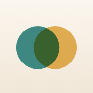

<!doctype html>
<html lang="tl">
<head>
  <meta charset="utf-8">
  <meta name="viewport" content="width=device-width, initial-scale=1, viewport-fit=cover, interactive-widget=resizes-content">
  <meta name="theme-color" content="#f8f4ef" media="(prefers-color-scheme: light)">
  <meta name="theme-color" content="#121615" media="(prefers-color-scheme: dark)">
  <meta name="apple-mobile-web-app-capable" content="yes">
  <meta name="apple-mobile-web-app-status-bar-style" content="default">
  <meta name="apple-mobile-web-app-title" content="Kasama">
  <meta name="description" content="Para sa pamilya at sa kanya: understanding psychosis, how to talk, getting help in the Philippines, and gentle daily routines, sleep and music.">
  <link rel="preload" href="fonts/inter-latin-wght-normal.woff2" as="font" type="font/woff2" crossorigin>
  <link rel="preload" href="fonts/fraunces-latin-soft-normal.woff2" as="font" type="font/woff2" crossorigin>
  <link rel="manifest" href="manifest.webmanifest">
  <link rel="icon" href="icons/icon-192.png">
  <link rel="apple-touch-icon" href="icons/apple-touch-icon.png">
  <title>Kasama</title>
  <style>
    @font-face { font-family: "Fraunces"; src: url(fonts/fraunces-latin-soft-normal.woff2) format("woff2"); font-weight: 100 900; font-style: normal; font-display: swap; }
    @font-face { font-family: "Fraunces"; src: url(fonts/fraunces-latin-wght-italic.woff2) format("woff2"); font-weight: 100 900; font-style: italic; font-display: swap; }
    @font-face { font-family: "Inter"; src: url(fonts/inter-latin-wght-normal.woff2) format("woff2"); font-weight: 100 900; font-style: normal; font-display: swap; }
    :root {
      --bg: #f8f4ef; --card: #ffffff; --ink: #1c2826; --ink2: #4b5a57; --muted: #8c9895; --line: rgba(28,40,38,.08); --line2: rgba(28,40,38,.14);
      --teal: #2a7a70; --teal2: #1e5f57; --teal-soft: #e2f0ec; --coral: #d7704f; --coral-soft: #fbe5da; --red: #b8392f; --red-soft: #fbe3e0;
      --sage: #e3f0e7; --peach: #fbe7db; --sky: #e4ecf7; --lav: #ece7f7; --sun: #fdf1d2; --rose: #fbe4e1;
      --h-home: linear-gradient(165deg, #fbeedd 0%, #f6e3cf 55%, #f8f4ef 100%);
      --h-learn: linear-gradient(165deg, #dfeee6 0%, #eaf3ed 60%, #f8f4ef 100%);
      --h-talk: linear-gradient(165deg, #fbe2d4 0%, #fbede4 60%, #f8f4ef 100%);
      --h-help: linear-gradient(165deg, #f9dcd8 0%, #fbe9e6 60%, #f8f4ef 100%);
      --h-care: linear-gradient(165deg, #e6e0f6 0%, #f0ecf9 60%, #f8f4ef 100%);
      --h-today: linear-gradient(165deg, #fdeac0 0%, #fdf3dc 60%, #f8f4ef 100%);
      --h-sleep: linear-gradient(170deg, #26305a 0%, #3b4a7a 55%, #5b6f98 100%);
      --h-music: linear-gradient(165deg, #f9dccb 0%, #fbe9df 60%, #f8f4ef 100%);
      --h-calm: linear-gradient(165deg, #d9eaf1 0%, #e6f1ee 60%, #f8f4ef 100%);
      --shadow: 0 1px 2px rgba(28,40,38,.04), 0 8px 26px rgba(28,40,38,.07); --shadow2: 0 2px 6px rgba(28,40,38,.06), 0 18px 44px rgba(28,40,38,.12);
      --r: 24px; --ease: cubic-bezier(.2,.7,.2,1); --spring: cubic-bezier(.2,.9,.25,1.2);
      --display: "Fraunces", "Iowan Old Style", Georgia, serif; --sans: "Inter", -apple-system, BlinkMacSystemFont, "Segoe UI", Roboto, system-ui, sans-serif;
      color-scheme: light;
    }
    @media (prefers-color-scheme: dark) { :root {
      --bg: #121615; --card: #1b2120; --ink: #e9efed; --ink2: #b7c3c0; --muted: #7f8b88; --line: rgba(255,255,255,.07); --line2: rgba(255,255,255,.14);
      --teal: #6cc4b8; --teal2: #8fd6cb; --teal-soft: #1d302c; --coral: #ee9274; --coral-soft: #33251f; --red: #f07d72; --red-soft: #35201e;
      --sage: #1c2a23; --peach: #2e2420; --sky: #1c2531; --lav: #24213a; --sun: #2e2919; --rose: #33201f;
      --h-home: linear-gradient(165deg, #2f2620 0%, #1d1c19 60%, #121615 100%); --h-learn: linear-gradient(165deg, #1d2c25 0%, #161d1a 60%, #121615 100%);
      --h-talk: linear-gradient(165deg, #33241d 0%, #1d1917 60%, #121615 100%); --h-help: linear-gradient(165deg, #35201f 0%, #1e1716 60%, #121615 100%);
      --h-care: linear-gradient(165deg, #262238 0%, #18171f 60%, #121615 100%); --h-today: linear-gradient(165deg, #322a17 0%, #1c1a14 60%, #121615 100%);
      --h-sleep: linear-gradient(170deg, #161b35 0%, #202a4c 55%, #121615 100%); --h-music: linear-gradient(165deg, #33241d 0%, #1d1917 60%, #121615 100%);
      --h-calm: linear-gradient(165deg, #182833 0%, #15201f 60%, #121615 100%);
      --shadow: 0 1px 2px rgba(0,0,0,.4); --shadow2: 0 10px 40px rgba(0,0,0,.5); color-scheme: dark; } }
    * { box-sizing: border-box; -webkit-tap-highlight-color: transparent; }
    html, body { background: var(--bg); }
    body { margin: 0; color: var(--ink); font: 16.5px/1.55 var(--sans); -webkit-font-smoothing: antialiased; overflow-x: clip; font-feature-settings: "ss01", "cv11"; }
    main { max-width: 620px; margin: 0 auto; padding: 0 20px calc(env(safe-area-inset-bottom) + 116px); }
    a { color: var(--teal); }
    h1, h2, h3 { margin: 0; font-family: var(--display); font-weight: 560; font-variation-settings: "SOFT" 100; letter-spacing: -.01em; line-height: 1.15; text-wrap: balance; }
    h1 { font-size: 34px; } h2 { font-size: 24px; } h3 { font-size: 19px; line-height: 1.3; }
    p { margin: .5em 0; text-wrap: pretty; }
    .muted { color: var(--muted); } .small { font-size: 14.5px; } .center { text-align: center; }
    .eyebrow { font: 650 11.5px/1.3 var(--sans); letter-spacing: .12em; text-transform: uppercase; color: var(--muted); }
    .row { display: flex; align-items: center; gap: 10px; } .between { justify-content: space-between; } .grow { flex: 1; min-width: 0; } .wrap { flex-wrap: wrap; }
    svg.i { width: 22px; height: 22px; fill: none; stroke: currentColor; stroke-width: 1.8; stroke-linecap: round; stroke-linejoin: round; flex: none; }
    .view.enter > * { animation: rise .5s var(--ease) both; } .view.enter > *:nth-child(2) { animation-delay: 50ms; } .view.enter > *:nth-child(n+3) { animation-delay: 100ms; }
    @keyframes rise { from { opacity: 0; transform: translateY(10px); } to { opacity: 1; transform: none; } }

    /* Hero: each section has its own colour world and illustration */
    .hero { position: relative; margin: 0 -20px; padding: calc(env(safe-area-inset-top) + 22px) 22px 30px; border-radius: 0 0 34px 34px; overflow: hidden; min-height: 210px; display: flex; flex-direction: column; justify-content: flex-end; }
    .hero .art { position: absolute; right: -6px; top: calc(env(safe-area-inset-top) + 6px); width: 168px; height: 150px; pointer-events: none; }
    .hero.has-top { padding-top: calc(env(safe-area-inset-top) + 78px); }
    .hero h1.long { font-size: 27px; }
    .hero .top { position: absolute; left: 22px; right: 22px; top: calc(env(safe-area-inset-top) + 16px); display: flex; justify-content: space-between; align-items: center; z-index: 2; }
    .hero h1 { position: relative; max-width: 76%; } .hero p { position: relative; color: var(--ink2); margin: 8px 0 0; max-width: 88%; font-size: 15.5px; }
    .hero .eyebrow { position: relative; margin-bottom: 6px; color: var(--ink2); opacity: .8; }
    .hero.dark { color: #f2f1fb; } .hero.dark p, .hero.dark .eyebrow { color: rgba(242,241,251,.8); }
    .iconbtn { width: 40px; height: 40px; border-radius: 50%; display: grid; place-items: center; background: color-mix(in srgb, var(--card) 70%, transparent); color: var(--ink2); border: 0; text-decoration: none;
               backdrop-filter: blur(10px); -webkit-backdrop-filter: blur(10px); box-shadow: var(--shadow); cursor: pointer; }
    .hero.dark .iconbtn { background: rgba(255,255,255,.14); color: #fff; }
    .back { display: inline-flex; align-items: center; gap: 4px; color: var(--ink2); font: 600 14.5px var(--sans); padding: 8px 14px 8px 10px; border-radius: 999px; text-decoration: none;
            background: color-mix(in srgb, var(--card) 72%, transparent); backdrop-filter: blur(10px); -webkit-backdrop-filter: blur(10px); box-shadow: var(--shadow); }
    .back svg { width: 18px; height: 18px; }
    .hero.dark .back { background: rgba(255,255,255,.14); color: #fff; }

    .card { position: relative; background: var(--card); border-radius: var(--r); padding: 18px 20px; box-shadow: var(--shadow); }
    @media (prefers-color-scheme: dark) { .card, .rowcard, .tile, .opt, .thing { border: 1px solid var(--line); } }
    .card + .card { margin-top: 12px; }
    .sec { margin-top: 28px; } .sec > .eyebrow { margin: 0 4px 12px; }
    .lift { margin-top: -22px; position: relative; z-index: 3; }
    .btn { appearance: none; border: 0; background: var(--card); color: var(--ink); border-radius: 999px; min-height: 48px; padding: 12px 22px; box-shadow: var(--shadow);
           font: 650 15.5px var(--sans); cursor: pointer; display: inline-flex; align-items: center; justify-content: center; gap: 8px; text-decoration: none; transition: transform .25s var(--spring); }
    .btn:active { transform: scale(.96); } .btn.teal { background: var(--teal); color: #fff; box-shadow: 0 8px 20px color-mix(in srgb, var(--teal) 30%, transparent); }
    @media (prefers-color-scheme: dark) { .btn.teal { color: #0f1a18; } }
    .btn.sm { min-height: 38px; padding: 7px 16px; font-size: 14px; } .btn.block { display: flex; width: 100%; } .btn.ghost { background: transparent; box-shadow: none; color: var(--ink2); }

    /* Rows and tiles */
    .rowcard { display: flex; align-items: center; gap: 14px; width: 100%; text-align: left; background: var(--card); border: 0; border-radius: 20px; padding: 14px 16px; box-shadow: var(--shadow);
               color: var(--ink); text-decoration: none; font: 600 16px/1.35 var(--sans); cursor: pointer; transition: transform .2s var(--spring); }
    .rowcard:active { transform: scale(.98); } .rowcard + .rowcard { margin-top: 10px; }
    .rowcard small { display: block; font-weight: 450; color: var(--muted); font-size: 13.5px; margin-top: 2px; line-height: 1.4; }
    .rowcard .chev { color: var(--muted); } .rowcard .chev svg { width: 18px; height: 18px; }
    .bubble { width: 44px; height: 44px; border-radius: 15px; display: grid; place-items: center; flex: none; }
    .b-teal { background: var(--teal-soft); color: var(--teal); } .b-sage { background: var(--sage); color: var(--teal); } .b-peach { background: var(--peach); color: var(--coral); }
    .b-rose { background: var(--rose); color: var(--red); } .b-lav { background: var(--lav); color: #6b5bb5; } .b-sun { background: var(--sun); color: #b9862a; } .b-sky { background: var(--sky); color: #4b6fa8; }
    @media (prefers-color-scheme: dark) { .b-lav { color: #b6a8f0; } .b-sun { color: #f0c862; } .b-sky { color: #9fbbe8; } }
    .tiles { display: grid; grid-template-columns: 1fr 1fr; gap: 12px; }
    .tile { border-radius: 24px; padding: 16px; text-decoration: none; color: var(--ink); min-height: 132px; display: flex; flex-direction: column; justify-content: space-between; box-shadow: var(--shadow); transition: transform .2s var(--spring); }
    .tile:active { transform: scale(.97); } .tile b { font: 600 17px/1.2 var(--display); font-variation-settings: "SOFT" 100; } .tile small { display: block; color: var(--ink2); font-size: 13px; margin-top: 3px; }
    .tile .bubble { width: 40px; height: 40px; background: color-mix(in srgb, var(--card) 70%, transparent); }

    /* Path to a psychiatrist: a gentle timeline */
    .path { position: relative; margin-top: 8px; }
    .path button { position: relative; display: flex; gap: 14px; width: 100%; text-align: left; border: 0; background: none; padding: 10px 0; cursor: pointer; color: var(--ink); font: inherit; }
    .path button::before { content: ""; position: absolute; left: 15px; top: 40px; bottom: -10px; width: 2px; background: var(--line2); }
    .path button:last-child::before { display: none; }
    .path .dot { width: 32px; height: 32px; border-radius: 50%; border: 2px solid var(--line2); background: var(--card); flex: none; display: grid; place-items: center; color: #fff; transition: all .3s var(--spring); position: relative; z-index: 1; }
    .path .done .dot { background: var(--teal); border-color: var(--teal); } .path .done::before { background: var(--teal); }
    .path b { display: block; font-weight: 650; font-size: 15.5px; } .path span.d { display: block; color: var(--muted); font-size: 13.5px; line-height: 1.45; margin-top: 2px; }
    .path .done b { color: var(--ink2); }
    .meter { height: 8px; border-radius: 8px; background: var(--line); overflow: hidden; margin-top: 10px; } .meter i { display: block; height: 100%; background: var(--teal); border-radius: 8px; transition: width .6s var(--ease); }

    /* Reading */
    .prose p { font-size: 17.5px; line-height: 1.72; color: var(--ink); margin: 0 0 1em; }
    .key { position: relative; background: var(--teal-soft); border-radius: 22px; padding: 18px 20px 18px 52px; margin: 18px 0; font: 600 17px/1.5 var(--display); font-variation-settings: "SOFT" 100; color: var(--teal2); }
    .key::before { content: "\201C"; position: absolute; left: 16px; top: 4px; font: 700 48px var(--display); color: var(--teal); opacity: .5; }
    .warn { background: var(--rose); color: var(--ink); border-radius: 18px; padding: 13px 16px; margin: 14px 0; font-size: 15px; }
    .avoid { display: flex; gap: 12px; align-items: flex-start; padding: 10px 0; font-size: 15.5px; color: var(--ink2); }
    .avoid .x { width: 26px; height: 26px; border-radius: 50%; background: var(--coral-soft); color: var(--coral); display: grid; place-items: center; flex: none; margin-top: 1px; } .avoid .x svg { width: 14px; height: 14px; stroke-width: 2.6; }
    .say { position: relative; background: var(--teal-soft); border-radius: 22px 22px 22px 6px; padding: 14px 18px; margin: 10px 26px 10px 0; font: italic 450 17.5px/1.5 var(--display); color: var(--ink); }
    .say + .say { margin-top: 10px; }
    ul.tight { margin: 6px 0; padding-left: 20px; } ul.tight li { margin: 7px 0; line-height: 1.5; } ul.tight li::marker { color: var(--teal); }
    .steps-big .card h3 { margin-top: 2px; } .num { font: 700 12px var(--sans); letter-spacing: .1em; color: var(--teal); }
    .opt { display: flex; gap: 12px; align-items: flex-start; width: 100%; text-align: left; border: 2px solid transparent; background: var(--card); color: var(--ink); border-radius: 20px; padding: 14px 16px; margin-top: 10px;
           font: 15.5px/1.5 var(--sans); cursor: pointer; box-shadow: var(--shadow); transition: transform .2s var(--spring); }
    .opt:active { transform: scale(.98); } .opt .mark { width: 26px; height: 26px; border-radius: 50%; border: 2px solid var(--line2); flex: none; display: grid; place-items: center; color: #fff; }
    .opt.good { border-color: var(--teal); } .opt.good .mark { background: var(--teal); border-color: var(--teal); } .opt.bad { border-color: var(--coral); opacity: .8; } .opt.bad .mark { background: var(--coral); border-color: var(--coral); }
    .opt .mark svg { width: 14px; height: 14px; stroke-width: 2.8; }
    .fb { margin-top: 14px; font-size: 15.5px; color: var(--ink2); line-height: 1.55; }
    .dots { display: flex; gap: 6px; justify-content: center; margin: 4px 0 14px; } .dots i { width: 8px; height: 8px; border-radius: 50%; background: var(--line2); } .dots i.on { background: var(--teal); width: 22px; border-radius: 6px; }

    /* Forms */
    .chips { display: flex; flex-wrap: wrap; gap: 8px; }
    .chip { border: 0; background: var(--bg); color: var(--ink2); border-radius: 999px; padding: 8px 14px; font: 600 13.5px var(--sans); cursor: pointer; transition: all .2s var(--ease); box-shadow: inset 0 0 0 1px var(--line2); }
    .chip.on { background: var(--teal); color: #fff; box-shadow: none; }
    @media (prefers-color-scheme: dark) { .chip.on { color: #0f1a18; } }
    textarea, input[type=text], input[type=tel], input[type=time] { width: 100%; border: 0; background: var(--bg); color: var(--ink); border-radius: 16px; padding: 13px 15px; font: 16px var(--sans); outline: 0; box-shadow: inset 0 0 0 1px var(--line2); }
    textarea { resize: vertical; min-height: 96px; line-height: 1.5; } textarea:focus, input:focus { box-shadow: inset 0 0 0 2px var(--teal); }
    input[type=time] { font: 600 26px var(--sans); text-align: center; padding: 14px 8px; }
    label.f { display: block; margin-top: 12px; } label.f > span { display: block; font: 650 12px var(--sans); letter-spacing: .06em; text-transform: uppercase; color: var(--muted); margin: 0 4px 6px; }
    .note { padding: 14px 0; border-top: 1px solid var(--line); } .note:first-child { border-top: 0; } .note .d { font: 600 12.5px var(--sans); color: var(--muted); }

    /* Crisis */
    .crisis { background: linear-gradient(160deg, var(--rose), var(--card) 85%); border-radius: var(--r); padding: 20px; box-shadow: var(--shadow); }
    .crisis h3 { color: var(--red); }
    .crisis a.call { display: flex; align-items: center; gap: 12px; padding: 12px 0; border-top: 1px solid var(--line); text-decoration: none; color: var(--ink); }
    .crisis a.call:first-of-type { border-top: 0; margin-top: 6px; }
    .crisis a.call .bubble { width: 38px; height: 38px; border-radius: 50%; background: var(--red); color: #fff; } .crisis a.call .bubble svg { width: 18px; height: 18px; }
    .crisis a.call b { display: block; font: 650 17px var(--sans); letter-spacing: .01em; } .crisis a.call span.l { display: block; font-size: 13px; color: var(--muted); }

    /* His space */
    .ringcard { display: flex; align-items: center; gap: 18px; }
    .ring { width: 92px; height: 92px; flex: none; position: relative; } .ring svg { width: 100%; height: 100%; transform: rotate(-90deg); }
    .ring .track { stroke: var(--line2); } .ring .val { stroke: var(--teal); transition: stroke-dashoffset .8s var(--spring); }
    .ring b { position: absolute; inset: 0; display: grid; place-items: center; font: 600 26px var(--display); font-variation-settings: "SOFT" 100; }
    .thing { display: flex; align-items: center; gap: 14px; width: 100%; padding: 16px; border-radius: 20px; background: var(--card); border: 0; cursor: pointer; text-align: left; color: var(--ink);
             font: 600 16.5px var(--sans); box-shadow: var(--shadow); transition: transform .2s var(--spring); }
    .thing:active { transform: scale(.98); } .thing + .thing { margin-top: 10px; }
    .tick { width: 30px; height: 30px; border-radius: 50%; border: 2px solid var(--line2); flex: none; display: grid; place-items: center; color: #fff; transition: all .35s var(--spring); }
    .tick svg { width: 16px; height: 16px; stroke-width: 3; opacity: 0; transform: scale(.4); transition: all .35s var(--spring); }
    .thing.done .tick { background: var(--teal); border-color: var(--teal); } .thing.done .tick svg { opacity: 1; transform: none; }
    .thing.done span.grow { color: var(--muted); text-decoration: line-through; text-decoration-color: var(--line2); }
    .moods { display: flex; justify-content: space-between; gap: 8px; }
    .moods button { flex: 1; aspect-ratio: 1; max-width: 64px; border-radius: 50%; border: 0; background: none; padding: 0; cursor: pointer; transition: transform .25s var(--spring); opacity: .55; filter: saturate(.6); }
    .moods button svg { width: 100%; height: 100%; } .moods button.on { opacity: 1; filter: none; transform: scale(1.12); } .moods button:active { transform: scale(.92); }
    .bars { display: grid; grid-template-columns: repeat(7, 1fr); gap: 8px; align-items: end; height: 96px; margin-top: 12px; }
    .bars div { display: flex; flex-direction: column; justify-content: flex-end; align-items: center; height: 100%; gap: 6px; }
    .bars i { width: 100%; max-width: 30px; border-radius: 10px; background: linear-gradient(180deg, var(--teal2), var(--teal)); min-height: 6px; transition: height .6s var(--ease); }
    .bars i.zero { background: var(--line2); } .bars i.warm { background: linear-gradient(180deg, #f1a483, var(--coral)); }
    .bars span { font: 650 11px var(--sans); color: var(--muted); } .bars div.today span { color: var(--teal); }
    .timer-ring { width: 220px; height: 220px; margin: 6px auto 10px; position: relative; } .timer-ring svg { width: 100%; height: 100%; transform: rotate(-90deg); }
    .timer-ring .track { stroke: var(--line); } .timer-ring .val { stroke: var(--coral); transition: stroke-dashoffset .3s linear; }
    .timer { position: absolute; inset: 0; display: grid; place-items: center; font: 400 54px var(--display); font-variation-settings: "SOFT" 100; font-variant-numeric: tabular-nums; }
    .idea { font: italic 450 19px/1.5 var(--display); margin: 8px 0 0; }
    .breath { width: 220px; height: 220px; margin: 18px auto; border-radius: 50%; display: grid; place-items: center; text-align: center; font: 600 17px var(--sans); color: var(--teal2);
              background: radial-gradient(circle at 35% 30%, #ffffffaa, transparent 45%), radial-gradient(circle, color-mix(in srgb, var(--teal) 32%, transparent), color-mix(in srgb, var(--teal) 12%, transparent) 70%);
              box-shadow: 0 0 0 14px color-mix(in srgb, var(--teal) 8%, transparent), 0 0 0 30px color-mix(in srgb, var(--teal) 4%, transparent); transform: scale(.72); transition: transform 4s ease-in-out; }
    .breath.in { transform: scale(1); transition-duration: 4s; } .breath.out { transform: scale(.72); transition-duration: 6s; }
    .ground li { font-size: 17.5px; margin: 10px 0; } .ground b { display: inline-grid; place-items: center; width: 30px; height: 30px; border-radius: 50%; background: var(--teal-soft); color: var(--teal); margin-right: 8px; font-size: 14px; }

    nav.tabs { position: fixed; left: 50%; transform: translateX(-50%); bottom: calc(env(safe-area-inset-bottom) + 14px); z-index: 20; width: min(440px, calc(100% - 24px)); padding: 7px; border-radius: 30px;
               background: color-mix(in srgb, var(--card) 82%, transparent); backdrop-filter: blur(24px) saturate(1.7); -webkit-backdrop-filter: blur(24px) saturate(1.7);
               box-shadow: 0 1px 0 rgba(255,255,255,.4) inset, var(--shadow2); display: flex; border: 1px solid var(--line); }
    nav.tabs[hidden] { display: none; }
    nav.tabs a { flex: 1; display: flex; flex-direction: column; align-items: center; gap: 3px; text-decoration: none; border-radius: 24px; color: var(--muted); font: 650 10.5px var(--sans); padding: 8px 0 7px; transition: all .3s var(--ease); }
    nav.tabs a svg { width: 23px; height: 23px; } nav.tabs a.on { color: var(--teal); background: var(--teal-soft); }
    .toast { position: fixed; left: 0; right: 0; margin: 0 auto; width: max-content; max-width: 90vw; text-align: center; bottom: calc(env(safe-area-inset-bottom) + 100px); background: var(--ink); color: var(--bg);
             padding: 12px 20px; border-radius: 20px; font: 600 14px var(--sans); z-index: 80; animation: rise .35s var(--spring) both; box-shadow: var(--shadow2); }
    .update { position: fixed; left: 0; right: 0; margin: 0 auto; width: max-content; top: calc(env(safe-area-inset-top) + 12px); z-index: 85; border: 0; background: var(--teal); color: #fff; padding: 12px 22px; border-radius: 999px; font: 700 14px var(--sans); cursor: pointer; box-shadow: var(--shadow2); }

    /* First screen */
    .welcome { min-height: 100vh; display: flex; flex-direction: column; justify-content: center; padding: calc(env(safe-area-inset-top) + 20px) 0 calc(env(safe-area-inset-bottom) + 28px); }
    .welcome .art { width: 100%; max-width: 330px; margin: 0 auto 14px; display: block; }
    .welcome h1 { font-size: 36px; } .choice { display: flex; gap: 16px; align-items: center; text-align: left; width: 100%; border: 0; background: var(--card); border-radius: 26px; padding: 18px; margin-top: 12px;
             cursor: pointer; color: var(--ink); box-shadow: var(--shadow); transition: transform .2s var(--spring); }
    .choice:active { transform: scale(.98); } .choice b { display: block; font: 600 19px var(--display); font-variation-settings: "SOFT" 100; } .choice span.t { color: var(--ink2); font-size: 14.5px; line-height: 1.45; display: block; margin-top: 2px; }
    .choice .bubble { width: 56px; height: 56px; border-radius: 18px; }

    /* Sheets (install) */
    .sheet-back { position: fixed; inset: 0; z-index: 70; background: rgba(15,22,21,.4); display: flex; align-items: flex-end; justify-content: center; animation: fade .25s both; backdrop-filter: blur(2px); }
    .sheet { width: min(520px, 100%); background: var(--bg); border-radius: 30px 30px 0 0; padding: 12px 22px calc(env(safe-area-inset-bottom) + 20px); max-height: 90vh; overflow-y: auto; animation: up .45s var(--spring) both; }
    .sheet .grab { width: 40px; height: 5px; border-radius: 5px; background: var(--line2); margin: 0 auto 18px; }
    @keyframes up { from { transform: translateY(100%); } to { transform: none; } } @keyframes fade { from { opacity: 0; } to { opacity: 1; } }
    ol.steps { list-style: none; counter-reset: s; margin: 8px 0; padding: 0; background: var(--card); border-radius: 20px; padding: 4px 16px; box-shadow: var(--shadow); }
    ol.steps li { counter-increment: s; display: flex; gap: 12px; align-items: flex-start; padding: 12px 0; border-top: 1px solid var(--line); font-size: 15.5px; line-height: 1.45; }
    ol.steps li:first-child { border-top: 0; }
    ol.steps li::before { content: counter(s); flex: none; width: 26px; height: 26px; border-radius: 50%; background: var(--teal-soft); color: var(--teal); font: 700 13px/26px var(--sans); text-align: center; margin-top: 1px; }
    .ios-ic { display: inline-flex; vertical-align: -5px; width: 22px; height: 22px; border-radius: 6px; background: var(--card); box-shadow: inset 0 0 0 1px var(--line2); align-items: center; justify-content: center; color: #1a73e8; margin: 0 2px; }
    .ios-ic svg { width: 15px; height: 15px; fill: none; stroke: currentColor; stroke-width: 2; stroke-linecap: round; stroke-linejoin: round; }
    /* Bite-sized steps: one idea per screen */
    .stephead { position: relative; margin: 0 -20px; padding: calc(env(safe-area-inset-top) + 16px) 20px 22px; border-radius: 0 0 30px 30px; }
    .stephead h2 { font-size: 26px; margin-top: 4px; }
    .bar { height: 6px; border-radius: 6px; background: var(--line2); overflow: hidden; margin: 18px 4px 14px; } .bar i { display: block; height: 100%; background: var(--teal); border-radius: 6px; transition: width .4s var(--ease); }
    .stepcard { padding: 24px 22px; min-height: 230px; }
    .big { font-size: 19.5px; line-height: 1.62; color: var(--ink); margin: 6px 0; text-wrap: pretty; }
    .stepcard .say { margin-right: 0; font-size: 18.5px; } .stepcard .avoid { font-size: 17px; }
    .stepnav { display: flex; justify-content: space-between; gap: 12px; margin-top: 16px; } .stepnav .btn, .nextstep .row .btn { flex: 1; min-height: 56px; font-size: 16.5px; white-space: nowrap; padding: 12px 14px; } .stepnav .btn svg { width: 18px; height: 18px; }
    .bigcall { display: flex; align-items: center; gap: 16px; width: 100%; padding: 20px; border-radius: 24px; text-decoration: none; color: #fff; background: var(--red); box-shadow: 0 10px 26px color-mix(in srgb, var(--red) 30%, transparent); }
    .bigcall + .bigcall { margin-top: 12px; } .bigcall b { display: block; font: 700 28px var(--sans); letter-spacing: .02em; } .bigcall span.l { display: block; font-size: 14.5px; opacity: .92; }
    .bigcall .bubble { width: 52px; height: 52px; border-radius: 50%; background: rgba(255,255,255,.2); color: #fff; } .bigcall.teal { background: var(--teal); box-shadow: 0 10px 26px color-mix(in srgb, var(--teal) 30%, transparent); }
    @media (prefers-color-scheme: dark) { .bigcall { color: #1a0f0e; } .bigcall .bubble { color: #1a0f0e; background: rgba(0,0,0,.12); } }
    details.more { margin-top: 14px; } details.more > summary { list-style: none; cursor: pointer; font: 650 15px var(--sans); color: var(--teal); padding: 10px 4px; }
    details.more > summary::-webkit-details-marker { display: none; } details.more > summary::before { content: "+ "; } details.more[open] > summary::before { content: "\2212  "; }
    .nextstep { border: 2px solid var(--teal); } .nextstep .row .btn { flex: 1; }
    @media (prefers-reduced-motion: reduce) { *, *::before, *::after { animation: none !important; transition: none !important; } }
  </style>
</head>
<body>
  <main id="main"></main>
  <nav class="tabs" id="tabs" hidden></nav>
  <script>
  "use strict";
  const APP_VERSION = "5", APP_DATE = "12 Nov 2026";
  const $ = s => document.querySelector(s);
  const esc = s => String(s ?? "").replace(/[&<>"']/g, c => ({ "&": "&amp;", "<": "&lt;", ">": "&gt;", '"': "&quot;", "'": "&#39;" }[c]));
  const DAY = 864e5, uid = () => Date.now().toString(36) + Math.random().toString(36).slice(2, 6);
  const dayKey = t => { const d = new Date(t); return `${d.getFullYear()}-${String(d.getMonth() + 1).padStart(2, "0")}-${String(d.getDate()).padStart(2, "0")}`; };
  const dstr = t => new Date(t).toLocaleDateString("en-PH", { weekday: "short", day: "numeric", month: "short" });
  function toast(m, ms = 2600) { document.querySelectorAll(".toast").forEach(t => t.remove()); const t = document.createElement("div"); t.className = "toast"; t.textContent = m; document.body.appendChild(t); setTimeout(() => t.remove(), ms); }
  const haptic = (p = 8) => { try { navigator.vibrate?.(p); } catch (e) {} };

  /* Everything stays on this phone (localStorage). Nothing is sent anywhere. */
  const KEY = "kasama";
  const db = Object.assign({ space: null, names: { him: "", me: "" }, steps: {}, notes: [], lessons: {}, practice: {}, care: [], contacts: [], today: {}, things: null, sleep: {}, music: [], moods: {} },
    (() => { try { return JSON.parse(localStorage.getItem(KEY)) || {}; } catch (e) { return {}; } })());
  const save = () => { try { localStorage.setItem(KEY, JSON.stringify(db)); } catch (e) {} };
  const him = () => db.names.him || "siya";

  /* ---------- Line icons (24px grid) ---------- */
  const P = {
    home: `<path d="M4 10.5 12 4l8 6.5V19a1 1 0 0 1-1 1h-4v-5.5h-6V20H5a1 1 0 0 1-1-1z"/>`, book: `<path d="M12 6.5C10 5 7 4.5 4 5v13c3-.5 6 0 8 1.5 2-1.5 5-2 8-1.5V5c-3-.5-6 0-8 1.5zM12 6.5V19.5"/>`,
    chat: `<path d="M5 5h14a2 2 0 0 1 2 2v8a2 2 0 0 1-2 2h-8l-5 4v-4H5a2 2 0 0 1-2-2V7a2 2 0 0 1 2-2z"/>`, heart: `<path d="M12 20s-7.5-4.6-7.5-10.5A4.3 4.3 0 0 1 12 7a4.3 4.3 0 0 1 7.5 2.5C19.5 15.4 12 20 12 20z"/>`,
    leaf: `<path d="M5 19c0-8 5-13 14-14 0 9-5 14-14 14z"/><path d="M5 19 13 11"/>`, sun: `<circle cx="12" cy="12" r="4.2"/><path d="M12 2.5v2M12 19.5v2M4.6 4.6 6 6M18 18l1.4 1.4M2.5 12h2M19.5 12h2M4.6 19.4 6 18M18 6l1.4-1.4"/>`,
    moon: `<path d="M19.5 14.5A8 8 0 0 1 9.5 4.5a8 8 0 1 0 10 10z"/>`, music: `<path d="M9 18V5.5l11-2V16"/><circle cx="6.5" cy="18" r="2.5"/><circle cx="17.5" cy="16" r="2.5"/>`,
    wave: `<path d="M3 10c2.5-3 5-3 7.5 0s5 3 7.5 0 3-2 3-2"/><path d="M3 15.5c2.5-3 5-3 7.5 0s5 3 7.5 0 3-2 3-2"/>`, phone: `<path d="M6.5 3.5h3l1.5 4.5-2 1.3a12 12 0 0 0 5.7 5.7l1.3-2 4.5 1.5v3a2 2 0 0 1-2.2 2A17 17 0 0 1 4.5 5.7a2 2 0 0 1 2-2.2z"/>`,
    note: `<path d="M6 3.5h9l4 4V20a.5.5 0 0 1-.5.5h-12A.5.5 0 0 1 6 20z"/><path d="M14.5 3.5V8H19M9 12h7M9 15.5h7"/>`, check: `<path d="M5 12.5l4.5 4.5L19 7.5"/>`, x: `<path d="M6 6l12 12M18 6 6 18"/>`,
    chev: `<path d="M9 5.5 15.5 12 9 18.5"/>`, back: `<path d="M15 5.5 8.5 12l6.5 6.5"/>`, gear: `<circle cx="12" cy="12" r="3"/><path d="M19.4 15a1.7 1.7 0 0 0 .3 1.8l.1.1a2 2 0 1 1-2.8 2.8l-.1-.1a1.7 1.7 0 0 0-1.8-.3 1.7 1.7 0 0 0-1 1.5V21a2 2 0 1 1-4 0v-.1a1.7 1.7 0 0 0-1.1-1.5 1.7 1.7 0 0 0-1.8.3l-.1.1a2 2 0 1 1-2.8-2.8l.1-.1a1.7 1.7 0 0 0 .3-1.8 1.7 1.7 0 0 0-1.5-1H3a2 2 0 1 1 0-4h.1a1.7 1.7 0 0 0 1.5-1.1 1.7 1.7 0 0 0-.3-1.8l-.1-.1a2 2 0 1 1 2.8-2.8l.1.1a1.7 1.7 0 0 0 1.8.3H9a1.7 1.7 0 0 0 1-1.5V3a2 2 0 1 1 4 0v.1a1.7 1.7 0 0 0 1 1.5 1.7 1.7 0 0 0 1.8-.3l.1-.1a2 2 0 1 1 2.8 2.8l-.1.1a1.7 1.7 0 0 0-.3 1.8V9a1.7 1.7 0 0 0 1.5 1H21a2 2 0 1 1 0 4h-.1a1.7 1.7 0 0 0-1.5 1z"/>`,
    share: `<path d="M12 15V3.5M7.5 8 12 3.5 16.5 8"/><path d="M5 12v7.5h14V12"/>`, download: `<path d="M12 4v11M7.5 10.5 12 15l4.5-4.5"/><path d="M5 19.5h14"/>`, swap: `<path d="M7 7h12l-3.5-3.5M17 17H5l3.5 3.5"/>`,
    info: `<circle cx="12" cy="12" r="8.5"/><path d="M12 11v5.5M12 7.8v.2"/>`, plus: `<path d="M12 5v14M5 12h14"/>`, spark: `<path d="M12 3.5l1.8 5.2 5.2 1.8-5.2 1.8L12 17.5l-1.8-5.2L5 10.5l5.2-1.8z"/>`,
    shield: `<path d="M12 3.5 19 6v5.5c0 4.5-3 7.8-7 9-4-1.2-7-4.5-7-9V6z"/>`, map: `<path d="M12 21s-6.5-5.6-6.5-11a6.5 6.5 0 0 1 13 0C18.5 15.4 12 21 12 21z"/><circle cx="12" cy="10" r="2.3"/>`,
    hand: `<path d="M8 13V6.5a1.5 1.5 0 0 1 3 0V12M11 11.5V5a1.5 1.5 0 0 1 3 0v6.5M14 11.5V6.5a1.5 1.5 0 0 1 3 0V14c0 3.6-2.4 6.5-6 6.5-2.4 0-3.8-1-5-3l-2.2-3.8a1.4 1.4 0 0 1 2.3-1.6L8 13"/>`,
    clip: `<path d="M9 4.5h6v2.5H9z"/><path d="M15 5.5h2.5a1 1 0 0 1 1 1V20a1 1 0 0 1-1 1h-11a1 1 0 0 1-1-1V6.5a1 1 0 0 1 1-1H9M9 12h6M9 15.5h4"/>`,
  };
  const ic = (n, cls = "i") => `<svg class="${cls}" viewBox="0 0 24 24" aria-hidden="true">${P[n] || ""}</svg>`;
  /* Mood faces: soft colour, simple features (rough → glad) */
  const MOODC = ["#f3a9a0", "#f6c49f", "#f2d98f", "#bcdcc5", "#9fd5c6"];
  const face = n => { const c = MOODC[n - 1], m = [["M17 34c4-5 10-5 14 0", 1], ["M18 32.5c4-2.5 8-2.5 12 0", 1], ["M18 31h12", 0], ["M18 30c4 3 8 3 12 0", 1], ["M16.5 29c4 6 11 6 15 0", 1]][n - 1][0];
    return `<svg viewBox="0 0 48 48"><circle cx="24" cy="24" r="22" fill="${c}"/><circle cx="17.5" cy="20" r="2.4" fill="#2a2522"/><circle cx="30.5" cy="20" r="2.4" fill="#2a2522"/><path d="${m}" fill="none" stroke="#2a2522" stroke-width="2.6" stroke-linecap="round"/>${n >= 4 ? `<circle cx="13" cy="27" r="3" fill="#fff" opacity=".35"/><circle cx="35" cy="27" r="3" fill="#fff" opacity=".35"/>` : ""}</svg>`; };
  const MOOD_LABEL = ["Mabigat", "Medyo mabigat", "Okay lang", "Maayos", "Masaya"];
  const ring = (v, max, size = 92, stroke = 9, cls = "") => { const r = (size - stroke) / 2, c = 2 * Math.PI * r, f = max ? Math.min(1, v / max) : 0;
    return `<svg viewBox="0 0 ${size} ${size}"><circle class="track" cx="${size / 2}" cy="${size / 2}" r="${r}" fill="none" stroke-width="${stroke}"/><circle class="val ${cls}" cx="${size / 2}" cy="${size / 2}" r="${r}" fill="none" stroke-width="${stroke}" stroke-linecap="round" stroke-dasharray="${c.toFixed(1)}" stroke-dashoffset="${(c * (1 - f)).toFixed(1)}"/></svg>`; };

  /* ---------- Illustrations (original, simple shapes) ---------- */
  const ART = {
    home: `<svg viewBox="0 0 170 150"><circle cx="112" cy="62" r="34" fill="#f5b764" opacity=".85"/><circle cx="112" cy="62" r="48" fill="#f5b764" opacity=".15"/>
      <path d="M0 132c30-30 62-36 96-22s52 8 74-4v44H0z" fill="#2a7a70" opacity=".85"/><path d="M20 150c26-26 64-34 96-20s38 10 54 2v18z" fill="#9ccfb8"/>
      <circle cx="66" cy="96" r="7" fill="#1c2826"/><path d="M58 122c0-10 3-17 8-17s8 7 8 17z" fill="#1c2826"/><circle cx="84" cy="94" r="7" fill="#d7704f"/><path d="M76 122c0-11 3-18 8-18s8 7 8 18z" fill="#d7704f"/></svg>`,
    learn: `<svg viewBox="0 0 170 150"><circle cx="118" cy="48" r="40" fill="#bfe0cd" opacity=".7"/><path d="M40 112c18-10 36-12 52-4V58c-16-8-34-6-52 4z" fill="#fff"/><path d="M144 112c-18-10-36-12-52-4V58c16-8 34-6 52 4z" fill="#f4fbf7"/>
      <path d="M92 58v50" stroke="#2a7a70" stroke-width="2"/><path d="M52 74c10-4 20-5 30-2M52 86c10-4 20-5 30-2M102 72c10-3 20-2 30 2M102 84c10-3 20-2 30 2" stroke="#9ccfb8" stroke-width="3" stroke-linecap="round"/>
      <path d="M92 58c0-14 8-24 20-28-1 13-8 23-20 28z" fill="#2a7a70"/><path d="M92 56c-2-10-8-17-17-19 1 10 7 17 17 19z" fill="#5fae96"/></svg>`,
    talk: `<svg viewBox="0 0 170 150"><circle cx="120" cy="50" r="42" fill="#f6c4a8" opacity=".55"/><rect x="38" y="40" width="80" height="54" rx="22" fill="#fff"/><path d="M58 92l-10 16 24-14z" fill="#fff"/>
      <rect x="78" y="72" width="70" height="46" rx="20" fill="#d7704f"/><path d="M130 116l12 14-26-12z" fill="#d7704f"/><circle cx="62" cy="67" r="4" fill="#d7704f"/><circle cx="78" cy="67" r="4" fill="#d7704f"/><circle cx="94" cy="67" r="4" fill="#d7704f"/>
      <path d="M96 95c6 6 14 6 20 0" stroke="#fff" stroke-width="4" fill="none" stroke-linecap="round"/></svg>`,
    help: `<svg viewBox="0 0 170 150"><circle cx="112" cy="58" r="44" fill="#f4b8b0" opacity=".45"/><path d="M98 122s-44-26-44-60a24 24 0 0 1 44-13 24 24 0 0 1 44 13c0 34-44 60-44 60z" fill="#b8392f" opacity=".9"/>
      <path d="M98 66v28M84 80h28" stroke="#fff" stroke-width="7" stroke-linecap="round"/></svg>`,
    care: `<svg viewBox="0 0 170 150"><circle cx="112" cy="54" r="42" fill="#cfc4f0" opacity=".6"/><path d="M76 104h48l-6 34h-36z" fill="#8f7ed6"/><path d="M72 98h56v10H72z" fill="#7a68c7" rx="3"/>
      <path d="M100 98V62" stroke="#2a7a70" stroke-width="4" stroke-linecap="round"/><path d="M100 72c-4-16-16-24-30-22 2 15 14 23 30 22z" fill="#5fae96"/><path d="M100 64c4-18 18-28 34-26-2 18-16 28-34 26z" fill="#2a7a70"/>
      <circle cx="136" cy="96" r="4" fill="#f5b764"/><circle cx="62" cy="40" r="3" fill="#f5b764"/></svg>`,
    today: `<svg viewBox="0 0 170 150"><g stroke="#f0a93b" stroke-width="5" stroke-linecap="round" opacity=".55"><path d="M108 18v14M146 50l-12 6M70 50l12 6M136 24l-9 10M80 24l9 10"/></g>
      <circle cx="108" cy="82" r="34" fill="#f5b764"/><circle cx="108" cy="82" r="50" fill="#f5b764" opacity=".18"/><path d="M0 122c40-18 80-20 120-8s40 6 50 2v34H0z" fill="var(--card)" opacity=".7"/><path d="M0 136c40-12 90-14 170-4v18H0z" fill="var(--bg)" opacity=".9"/></svg>`,
    sleep: `<svg viewBox="0 0 170 150"><circle cx="104" cy="64" r="40" fill="#f6e7b8"/><circle cx="122" cy="52" r="36" fill="#3b4a7a"/><g fill="#fff"><circle cx="40" cy="40" r="2.5"/><circle cx="64" cy="22" r="1.8"/><circle cx="150" cy="104" r="2.2"/><circle cx="56" cy="92" r="1.6"/><circle cx="148" cy="30" r="1.6"/></g>
      <path d="M30 60l3 7 7 3-7 3-3 7-3-7-7-3 7-3z" fill="#f6e7b8" opacity=".85"/></svg>`,
    music: `<svg viewBox="0 0 170 150"><circle cx="116" cy="56" r="42" fill="#f6c4a8" opacity=".55"/><g transform="rotate(-28 100 90)"><rect x="96" y="14" width="10" height="70" rx="3" fill="#7a4a32"/><rect x="92" y="6" width="18" height="16" rx="4" fill="#5c3523"/>
      <path d="M101 74c-22 0-32 12-32 26 0 10 7 16 7 22 0 14 12 22 25 22s25-8 25-22c0-6 7-12 7-22 0-14-10-26-32-26z" fill="#d7704f"/><circle cx="101" cy="104" r="9" fill="#5c3523"/><rect x="88" y="126" width="26" height="5" rx="2" fill="#5c3523"/></g>
      <path d="M140 92v-22l14-3v19" stroke="#2a7a70" stroke-width="4" fill="none" stroke-linecap="round"/><circle cx="136" cy="93" r="5" fill="#2a7a70"/><circle cx="150" cy="88" r="5" fill="#2a7a70"/></svg>`,
    calm: `<svg viewBox="0 0 170 150"><circle cx="108" cy="66" r="24" fill="#9fd5c6"/><circle cx="108" cy="66" r="40" fill="none" stroke="#9fd5c6" stroke-width="3" opacity=".6"/><circle cx="108" cy="66" r="56" fill="none" stroke="#9fd5c6" stroke-width="2" opacity=".35"/>
      <path d="M10 124c18-12 34-12 52 0s34 12 52 0 34-12 52 0" stroke="#2a7a70" stroke-width="5" fill="none" stroke-linecap="round" opacity=".7"/><path d="M30 140c18-10 34-10 52 0s34 10 52 0" stroke="#7fb9d6" stroke-width="4" fill="none" stroke-linecap="round" opacity=".6"/></svg>`,
    welcome: `<svg viewBox="0 0 360 230"><circle cx="230" cy="92" r="54" fill="#f5b764" opacity=".9"/><circle cx="230" cy="92" r="80" fill="#f5b764" opacity=".14"/>
      <path d="M0 196c60-56 130-70 200-40s110 20 160-6v80H0z" fill="#2a7a70" opacity=".88"/><path d="M40 230c50-44 130-58 200-34s80 18 120 6v28z" fill="#9ccfb8"/>
      <circle cx="148" cy="134" r="12" fill="#1c2826"/><path d="M134 182c0-18 6-30 14-30s14 12 14 30z" fill="#1c2826"/><circle cx="178" cy="130" r="12" fill="#d7704f"/><path d="M164 182c0-19 6-32 14-32s14 13 14 32z" fill="#d7704f"/>
      <path d="M160 160c4 3 8 3 12 0" stroke="#f8f4ef" stroke-width="3" stroke-linecap="round" fill="none"/></svg>`,
  };
  const hero = (k, eyebrow, title, sub = "", { top = "", dark = false } = {}) => `<header class="hero${dark ? " dark" : ""}${top && top !== gearBtn() ? " has-top" : ""}" style="background:var(--h-${k})"><div class="art">${ART[k] || ""}</div>${top ? `<div class="top">${top}</div>` : ""}
    ${eyebrow ? `<div class="eyebrow">${eyebrow}</div>` : ""}<h1${title.length > 34 ? ' class="long"' : ""}>${title}</h1>${sub ? `<p>${sub}</p>` : ""}</header>`;
  const backBtn = (href, label) => `<a class="back" href="${href}">${ic("back")}${esc(label)}</a>`;
  const gearBtn = () => `<span></span><a class="iconbtn" href="#/settings" aria-label="Settings">${ic("gear")}</a>`;
  const rowcard = (href, icon, b, title, sub = "", extra = "") => `<a class="rowcard" href="${href}"${extra}><span class="bubble ${b}">${ic(icon)}</span><span class="grow">${title}${sub ? `<small>${sub}</small>` : ""}</span><span class="chev">${ic("chev")}</span></a>`;
  const CRISIS = [
    ["Emergency (pulis, ambulansya, bumbero)", "911", "911"],
    ["NCMH Crisis Hotline · landline, toll-free", "1553", "1553"],
    ["NCMH Crisis Hotline · toll-free", "1800-1888-1553", "180018881553"],
    ["NCMH Crisis Hotline · Smart/TNT", "0919-057-1553", "09190571553"],
    ["NCMH Crisis Hotline · Globe/TM", "0917-899-8727", "09178998727"],
    ["NCMH Crisis Hotline · Globe/TM", "0966-351-4518", "09663514518"],
  ];
  const LESSONS = [
    { id: "what", t: "Ano ba talaga ang psychosis?", m: 3, body: [
      "Ang psychosis ay kondisyon kung saan nahihirapan ang utak na paghiwalayin kung ano ang totoo at kung ano ang galing sa sariling isip. Hindi ito kahinaan ng loob, hindi ito katamaran, at hindi niya ito pinili.",
      "Karaniwang may tatlong uri ng sintomas. Una, ang mga “dagdag”: nakakarinig ng boses na wala naman (hallucinations), o matinding paniniwala na hindi totoo, gaya ng may sumusunod o nagbabantay sa kanya (delusions). Pangalawa, ang mga “bawas”: nawawalan ng gana, lumalayo sa tao, parang walang emosyon, tumitigil sa mga dating gusto. Pangatlo, hirap mag-focus at mag-isip nang maayos.",
      "Kaya maaaring tumigil siya sa pagtugtog. Hindi dahil ayaw na niya sa musika; ang “bawas” na sintomas mismo ang kumukuha ng gana at lakas. Hindi ito masosolusyonan ng pagpilit, pero bumabalik ito sa tamang gamutan at panahon.",
      "Ang mga pagsabog ng galit, gaya ng pagtumba ng upuan o pagbasag ng cellphone, ay kadalasang galing sa takot at sobrang stress ng nararanasan niya, lalo na kung pakiramdam niya ay may banta sa kanya. Seryoso pa rin ito, pero tanda ito na kailangan na niya ng tulong, hindi ng sermon." ],
      key: "Hindi siya ang problema. Ang kondisyon ang problema, at kasama ninyo siya sa paglaban dito." },
    { id: "insight", t: "Bakit sinasabi niyang wala siyang sakit", m: 3, body: [
      "Isa sa pinakamahirap: maraming taong may psychosis ang tunay na hindi nakikitang may sakit sila. Ito ay tinatawag na anosognosia o lack of insight, at bahagi ito ng kondisyon mismo, galing sa paraan ng pagtrabaho ng utak. Sa pananaliksik, mga kalahati ng may schizophrenia ang nakakaranas nito.",
      "Ibig sabihin, hindi siya nagmamatigas. Para sa kanya, totoo ang nararanasan niya. Kaya kapag pinagtatalunan natin kung totoo o hindi, lalo lang siyang lumalayo at hindi na nagtitiwala.",
      "Ang mas gumagana: huwag pilitin siyang tanggapin na “may sakit” siya. Sa halip, hanapin ang mga bagay na gusto niyang mabago: makatulog nang maayos, mabawasan ang stress o takot, makabalik sa pagtugtog. Doon kayo magtulungan. Ito ang puso ng LEAP, na nasa “Kausapin” tab." ],
      key: "Ang layunin ay hindi manalo sa argumento. Ang layunin ay manatili siyang nagtitiwala sa inyo." },
    { id: "early", t: "Bakit ngayon na dapat magpatingin", m: 2, body: [
      "Malinaw sa pananaliksik: mas maaga ang gamutan, mas maganda ang paggaling. Ang tagal ng hindi nagagamot na psychosis (duration of untreated psychosis) ay isa sa pinakamalakas na palatandaan ng magiging takbo ng kanyang paggaling.",
      "Ang psychiatrist ang makakapagbigay ng tamang diagnosis at gamot. Ang mga antipsychotic na gamot ay napatunayang nakakatulong lalo sa mga “dagdag” na sintomas at sa pag-iwas sa pagbabalik nito. May side effects ang ilan, pero napag-uusapan at naaayos ito kasama ang doktor.",
      "Hindi kailangang hintayin na pumayag siya bago kayo kumilos. Puwedeng kayo muna, ang girlfriend o pamilya, ang kumonsulta sa psychiatrist para humingi ng gabay kung paano siya madadala. Tingnan ang “Tulong” tab." ],
      key: "Ang pinakamahalagang magagawa ninyo ngayon: tulungan siyang makarating sa psychiatrist." },
    { id: "treatment", t: "Kapag nagsimula na ang gamutan", m: 3, body: [
      "Karaniwang antipsychotic na gamot ang ibibigay. Kadalasan ilang araw hanggang ilang linggo bago makita ang epekto; madalas na unang gumaganda ang tulog at pagiging kalmado, bago ang mga boses o hinala.",
      "May mga side effect na dapat sabihin sa doktor, hindi itigil nang mag-isa: antok, pagtaas ng gana at timbang, pagkabalisa o hindi mapakali (akathisia), paninigas o panginginig. Kadalasan naaayos ito sa pagpapalit ng dosis o ng gamot.",
      "Ang pinakamadalas na dahilan ng pagbabalik ng sintomas ay ang paghinto ng gamot. Kung nahihirapan siyang uminom araw-araw, itanong sa doktor ang long-acting injection: iniksyon kada ilang linggo, kaya hindi na kailangang tandaan araw-araw.",
      "Hindi lang gamot: nakakatulong din ang therapy (CBT for psychosis), mga session para sa pamilya, at unti-unting pagbabalik sa routine, trabaho at musika. Itanong sa doktor kung ano ang mayroon sa inyong lugar.",
      "Paano tumulong nang hindi nagbabantay: pag-usapan kung paano niya gustong maalala (alarm, pillbox), at kumustahin ang pakiramdam niya sa gamot, hindi lang kung uminom na siya." ],
      key: "Ang tanong ay hindi \u201cuminom ka na ba?\u201d kundi \u201ckumusta ang pakiramdam mo sa gamot?\u201d" },
    { id: "worse", t: "Ano ang nagpapalala", m: 2, body: [
      "Kulang sa tulog: madalas ito ang unang senyales at nagpapalala rin ng hinala at boses. Ang tulog ay mahalagang bantayan.",
      "Droga at alak: ang marijuana at lalo na ang shabu (methamphetamine) ay kilalang nagti-trigger at nagpapalala ng psychosis. Pati ang sobrang alak. Kung gumagamit siya, mahalagang sabihin ito sa doktor, nang walang paninisi.",
      "Stress at gulo sa bahay: away, sigawan, sobrang daming tao o ingay, pressure na “bumalik ka na sa trabaho.” Ang kalmado at mainit na kapaligiran ay nakakatulong talaga, hindi lang “magandang pakiramdam.”",
      "Biglaang paghinto ng gamot (kapag nagsimula na siya): isa ito sa pinakamadalas na dahilan ng pagbabalik ng sintomas." ],
      key: "Tulog, walang droga, at kalmadong bahay: tatlong bagay na kayang tulungan ng pamilya araw-araw." },
    { id: "home", t: "Ang kalmadong bahay: ano ang sinasabi ng research", m: 3, body: [
      "Matagal nang pinag-aaralan ang tinatawag na “expressed emotion” sa pamilya. Paulit-ulit ang resulta: kapag maraming batikos, galit, o sobrang pakikialam ang pamilya, mas madalas bumabalik ang sintomas. Hindi ito paninisi sa pamilya; natural ang mga reaksyong ito kapag takot at pagod ka.",
      "Ang nakakatulong: mahinahong boses, maikli at malinaw na pananalita, papuri sa maliliit na hakbang, at pagbibigay ng espasyo kapag kailangan niya. Ang mga pamilyang natuto tungkol sa kondisyon at sa ganitong paraan ng pakikitungo ay may mas kaunting pagbabalik ng sintomas at pagkaka-ospital; ito ay family psychoeducation, isa sa pinakamatibay na ebidensya sa larangang ito.",
      "Hindi ibig sabihin na wala nang hangganan. Puwede kayong magsabi ng malinaw na limitasyon (“Hindi okay ang magbasag ng gamit”), nang mahinahon at walang pang-iinsulto." ],
      key: "Mahinahon, maikli, mainit, at may malinaw na limitasyon." },
    { id: "safety", t: "Tungkol sa galit at kaligtasan", m: 3, body: [
      "Karamihan ng taong may psychosis ay hindi marahas; mas madalas pa silang maging biktima. Pero tumataas ang panganib kapag hindi nagagamot, kapag may droga o alak, at kapag sobrang takot siya. Ang pagtumba ng upuan at pagbasag ng phone ay seryosong senyales na kailangan na ng tulong.",
      "Kapag galit o takot siya: bigyan siya ng espasyo, huwag harangan ang daan niya palabas, huwag hawakan o pigilan nang pisikal, magsalita nang mahina at mabagal, at huwag makipagtalo. Kayo rin: siguraduhing may daan kayo palabas.",
      "Itago ang mga bagay na maaaring makasakit (kutsilyo, gamot na marami, matutulis). Kung may banta sa buhay niya o ng iba, tumawag sa 911 o dalhin siya sa emergency room. Hindi ito pagtataksil sa kanya; ito ay pagmamahal." ],
      key: "Kaligtasan muna, ng lahat, kasama siya." },
    { id: "suicide", t: "Kung naiisip niyang saktan ang sarili", m: 3, body: [
      "Mas mataas ang panganib ng pagpapakamatay sa mga taong may psychosis, lalo na sa mga unang taon ng sakit at pagkalabas ng ospital. Hindi ito para takutin kayo; para alam ninyo ang hahanapin.",
      "Mga senyales: pagsasalita tungkol sa kamatayan o pagiging pabigat (\u201cmas mabuti kung wala na ako\u201d), pamimigay ng mga gamit, biglang pagiging kalmado pagkatapos ng matinding lungkot, paghahanap ng paraan, mga boses na nag-uutos na saktan ang sarili, at matinding hiya o kawalan ng pag-asa.",
      "Itanong nang diretso: \u201cNaiisip mo bang patayin ang sarili mo?\u201d Ipinapakita ng pananaliksik na ang pagtatanong ay hindi nagtatanim ng ideya. Sa halip, nagbibigay ito ng ginhawa at ng daan para humingi ng tulong.",
      "Kung oo ang sagot: manatili sa tabi niya, alisin ang mga bagay na puwedeng gamitin (maraming gamot, kutsilyo, lubid, pesticide), at tumawag agad sa NCMH 1553 o 911, o dalhin siya sa emergency room. Huwag mangakong ililihim ito." ],
      key: "Ang pagtatanong nang diretso ay pag-aalaga, hindi panganib." },
    { id: "faith", t: "Pananampalataya, hiya, at ang sasabihin ng iba", m: 2, body: [
      "Sa ating kultura, minsan iniisip na ito ay sinapian, kulam, o kahinaan ng pananampalataya. Igalang ang paniniwala ng pamilya; ang dasal at komunidad ay malaking suporta. Pero hindi ito kapalit ng gamutan; magkasama dapat.",
      "Ang hiya (“ano ang sasabihin ng kapitbahay”) ay madalas na dahilan kung bakit naaantala ang pagpapatingin. Ang psychosis ay medikal na kondisyon tulad ng diabetes o hika. Walang dapat ikahiya sa pagpapagamot.",
      "May batas tayo, ang Mental Health Act (RA 11036), na nagbibigay ng karapatan sa maayos at makataong pangangalaga." ],
      key: "Pananampalataya at gamutan: magkasama, hindi magkalaban." },
    { id: "recovery", t: "May pag-asa: ang paggaling", m: 2, body: [
      "Maraming taong nagkaroon ng unang episode ng psychosis ang gumagaling nang malaki, lalo na kung maaga ang gamutan at may suportadong pamilya. Marami ang nakakabalik sa trabaho, pag-aaral, at sa mga gusto nila, kasama ang musika.",
      "Hindi diretso ang daan; may magagandang linggo at mahihirap na linggo. Ang mahalaga ay ang direksyon, hindi ang bilis.",
      "Ang musika ay maaaring maging malaking bahagi ng paggaling niya. May pananaliksik (Cochrane review) na ang music therapy, kasabay ng karaniwang gamutan, ay nakakatulong sa pangkalahatang kalagayan, sa mga “bawas” na sintomas, at sa pakikisalamuha. Pero sa tamang panahon at walang pressure." ],
      key: "Hindi ito ang katapusan ng kuwento niya. Isa itong kabanata." },
    { id: "family", t: "Para sa pamilya niyang hindi pa nakakaintindi", m: 2, share: true, body: [
      "Normal na hindi agad maintindihan ng pamilya. Madalas ang unang reaksyon ay galit, hiya, o \u201cnag-iinarte lang.\u201d Ang kailangan nila ay simpleng paliwanag, hindi debate.",
      "Ibahagi ang mensahe sa ibaba sa Messenger o Viber. Maikli ito, mahinahon, at nakatuon sa kung paano sila makakatulong. Puwede itong i-edit bago ipadala.",
      "Kung may pinagkakatiwalaan silang tao, gaya ng doktor, nurse na kamag-anak, pari o pastor, hilingin na sila ang tumulong magpaliwanag.",
      "Bigyan sila ng panahon. Ang pag-unawa ay proseso; kahit isang tao lang sa pamilya ang maging kakampi, malaking tulong na." ],
      key: "Kailangan niya ang buong pamilya sa iisang panig: laban sa sakit, hindi laban sa kanya." },
    { id: "friends", t: "Para sa mga kaibigan", m: 2, body: [
      "Malaking bagay ang mga kaibigang nananatili. Maraming taong may psychosis ang nawawalan ng kaibigan dahil sa takot o hiya ng iba. Ang simpleng pagpapakita ay nakakatulong sa paggaling.",
      "Gawin: mag-text kahit maikli, mag-imbita sa simpleng bagay (kape, lakad, tugtugan nang walang pressure), makinig, at ituring siyang siya pa rin.",
      "Iwasan: tsismis, pagkukuwento ng nangyari sa bar sa iba, pagbibiro tungkol sa \u201cbaliw,\u201d o biglang paglayo. Igalang ang privacy niya at ng pamilya niya.",
      "Kung ikaw ang pinagkakatiwalaan niya, puwede kang maging tulay papunta sa tulong: \u201cKasama mo ako kung magpapatingin ka.\u201d Huwag ding kalimutang alagaan ang sarili mo." ],
      key: "Ang \u201cnandito lang ako\u201d ay isa sa pinakamalakas na bagay na masasabi mo." },
  ];
  const SCENES = [
    { id: "leap", t: "Ang LEAP: paraan ng pakikipag-usap", intro: "Binuo ito ni Dr. Xavier Amador, psychologist na ang kapatid ay may schizophrenia, para sa mga taong hindi naniniwalang may sakit sila. Apat na hakbang:", steps: [
      ["Listen · Makinig", "Makinig para maintindihan, hindi para kumontra. Ulitin sa sariling salita ang narinig mo: “Kung tama ang pagkaintindi ko, pakiramdam mo may nagbabantay sa ’yo.”"],
      ["Empathize · Damayan", "Damayan ang nararamdaman, kahit hindi ka sang-ayon sa paniniwala: “Nakakatakot siguro ’yon. Kung ako ’yan, matatakot din ako.”"],
      ["Agree · Sumang-ayon kung saan puwede", "Hanapin ang puwedeng pagkasunduan: “Sang-ayon ako na hindi ka nakakatulog nang maayos, at mahirap ’yon.” Kung tanungin ka kung naniniwala ka sa kanya, puwedeng: “Hindi ko alam, pero alam kong totoo ang takot mo, at nandito ako.”"],
      ["Partner · Magtulungan", "Magtulungan sa layuning gusto rin niya: “Subukan nating humingi ng tulong para makatulog ka. Sasamahan kita.”"] ],
      key: "Hindi mo kailangang sumang-ayon sa paniniwala para damayan ang nararamdaman." },
    { id: "paranoid", t: "“May sumusunod sa akin / may nagbabantay”", sit: "Kumbinsido siyang may nagmamanman, may sumusunod, o may gustong manakit sa kanya.",
      avoid: ["“Wala namang ganyan, guni-guni mo lang ’yan.” (Pinapawalang-bisa ang takot niya.)", "“Oo, baka nga may sumusunod.” (Pinapalakas ang paniniwala.)", "Pagtawa, pagbubulungan sa harap niya, o pagtingin-tingin sa isa’t isa."],
      say: ["“Mukhang takot na takot ka. Ano ang makakatulong para maging mas ligtas ang pakiramdam mo ngayon?”", "“Hindi ko nakikita ang nakikita mo, pero naniniwala akong nararamdaman mo talaga ’yan. Nandito lang ako.”", "“Gusto mo bang umupo muna tayo dito, malayo sa ingay?”"],
      why: "Ang pakikipagtalo tungkol sa totoo o hindi ay halos hindi gumagana at sumisira ng tiwala. Ang pagdamay sa takot at pagtulong na maging ligtas ang pakiramdam ay nagpapanatili ng koneksyon." },
    { id: "angry", t: "Galit siya o nagwawala", sit: "Sumisigaw, nagbabato ng gamit, o mukhang malapit nang sumabog.",
      avoid: ["Sumigaw pabalik o makipagtalo.", "Lumapit nang sobra, hawakan, o harangan ang pinto.", "Magbanta (“Ipapakulong kita”) o mag-sermon habang galit pa siya."],
      say: ["(Mahina at mabagal) “Nakikita kong galit na galit ka. Nandito lang ako. Hindi kita sasaktan.”", "“Lalayo muna ako nang kaunti para may espasyo ka.”", "Pagkatapos, kapag kalmado na: “Kanina, mukhang sobrang bigat ng nararamdaman mo. Gusto mo bang pag-usapan?”"],
      why: "Sa gitna ng galit, hindi naririnig ang paliwanag. Ang layunin ay pababain ang tensyon at manatiling ligtas ang lahat. Kung may panganib, tumawag sa 911.", danger: true },
    { id: "notsick", t: "“Wala akong sakit!”", sit: "Ayaw niyang tanggapin na may problema, at nagagalit kapag binabanggit.",
      avoid: ["“May sakit ka, tanggapin mo na.”", "Pagbabasa ng listahan ng sintomas niya.", "Paulit-ulit na pagbanggit ng diagnosis."],
      say: ["“Okay, hindi natin kailangang pag-usapan ang tawag diyan. Pero napansin kong hirap kang matulog. Totoo ba?”", "“Ano ang gusto mong mabago sa buhay mo ngayon?”", "“Nami-miss mo ba ang pagtugtog? Ano sa tingin mo ang pumipigil?”"],
      why: "Ayon sa LEAP, ang pagtutok sa mga layunin niya (tulog, stress, musika) ay mas nagbubukas ng daan sa tulong kaysa sa pagpilit na tanggapin ang diagnosis." },
    { id: "refuse", t: "Ayaw magpatingin sa doktor", sit: "Tumatanggi siya sa psychiatrist o sa anumang “doktor sa utak.”",
      avoid: ["“Baliw ka kaya kailangan mo ng psychiatrist.”", "Panlilinlang (“pupunta lang tayo sa mall” tapos ospital). Sinisira nito ang tiwala sa susunod.", "Ultimatum habang nasa krisis."],
      say: ["“Mukhang pagod na pagod ka at hirap kang matulog. May doktor na makakatulong diyan. Sasamahan kita.”", "“Hindi mo kailangang magdesisyon ngayon. Pag-isipan mo lang, at sabihin mo kung handa ka na.”", "“Para sa akin na lang, puwede mo bang subukan ang isang beses? Kung ayaw mo pagkatapos, pag-uusapan natin ulit.”"],
      why: "I-frame ang pagpapatingin sa paraang may saysay para sa kanya (tulog, stress, pagod) at ialok ang inyong presensya. Kung hindi pa rin, kayo muna ang kumonsulta para sa gabay. Kung may panganib, emergency na ito." },
    { id: "voices", t: "Nakakarinig siya ng boses", sit: "Kumikilos na parang may kausap, o sinasabi niyang may naririnig.",
      avoid: ["“Walang boses diyan!”", "Matakot o tumakbo palayo.", "Magtanong nang paulit-ulit kung ano ang sinasabi ng boses."],
      say: ["“May naririnig ka ba ngayon? Ano ang pakiramdam mo?”", "“Hindi ko naririnig, pero naniniwala akong naririnig mo. Paano kita matutulungan?”", "“Minsan nakakatulong ang musika o ang pag-hum. Gusto mo bang subukan?”"],
      why: "Mahalaga ring itanong kung inuutusan siya ng boses na saktan ang sarili o iba. Kung oo, emergency ito: tumawag sa 911 o NCMH 1553." },
    { id: "withdrawn", t: "Ayaw kumilos, nasa kwarto lang", sit: "Natutulog nang matagal, hindi naliligo, ayaw lumabas o makipag-usap.",
      avoid: ["“Tamad ka lang.”", "Pagkumpara sa iba (“Tingnan mo si ganito, may trabaho na”).", "Pagpilit sa malalaking gawain."],
      say: ["“Gusto mo bang samahan kitang maglakad nang sampung minuto?”", "“Kumain ka muna kahit konti. Ginawa ko ’yung gusto mo.”", "Papuri sa maliit: “Ang sarap makita kang nakalabas ngayon.”"],
      why: "Ang kawalan ng gana ay sintomas, hindi katamaran. Maliliit na imbitasyon at papuri sa maliliit na hakbang ang mas gumagana kaysa pressure." },
    { id: "suicide", t: "Nagsasalita tungkol sa kamatayan o pagpapakamatay", sit: "Sinasabi niyang pagod na siya sa buhay, pabigat siya, o mas mabuti kung wala na siya.",
      avoid: ["\u201cHuwag kang magsalita nang ganyan.\u201d (Pinapatahimik siya.)", "Pagsesermon tungkol sa kasalanan o sa pamilya.", "Iwanan siyang mag-isa, o mangakong ililihim mo."],
      say: ["\u201cSeryoso ako sa tanong na \u2019to: naiisip mo bang patayin ang sarili mo?\u201d", "\u201cSalamat at sinabi mo sa akin. Hindi kita iiwan. Hahanap tayo ng tulong ngayon.\u201d", "\u201cTatawag tayo sa NCMH ngayon, magkasama.\u201d"],
      why: "Ang diretsong tanong ay hindi nagtatanim ng ideya. Kung oo ang sagot o may plano siya: manatili sa tabi niya, alisin ang mga mapanganib na bagay, at tumawag sa NCMH 1553 o 911, o pumunta sa emergency room.", danger: true },
    { id: "after", t: "Pagkatapos ng isang insidente", sit: "Gaya ng pagtumba ng upuan sa bar o pagbasag ng cellphone. Kalmado na siya ngayon.",
      avoid: ["Pagbanggit nito sa harap ng ibang tao, o pagpapahiya.", "\u201cTingnan mo ang ginawa mo!\u201d habang sariwa pa.", "Pagpapanggap na walang nangyari."],
      say: ["\u201cKahapon, mukhang sobrang bigat ng nararamdaman mo. Ano ang nangyari para sa \u2019yo?\u201d", "\u201cHindi kita hinuhusgahan. Gusto ko lang maintindihan para matulungan kita.\u201d", "\u201cAno ang makakatulong para hindi na umabot sa ganoon?\u201d"],
      why: "Ang mahinahong usapan pagkatapos ay mas nagbubukas ng daan sa tulong kaysa sa sermon. Kung kailangang ayusin ang nasira (hal. sa bar), tulungan siya, at ipaliwanag nang maikli sa may-ari nang may paggalang sa privacy niya. Isulat din ito sa Talaan para sa doktor." },
    { id: "meds", t: "Ayaw uminom ng gamot", sit: "Kapag nagsimula na ang gamutan pero ayaw na niyang uminom, o itinitigil niya.",
      avoid: ["Paglalagay ng gamot sa pagkain nang palihim.", "Pagsigaw, pagbabanta, o paulit-ulit na \u201cuminom ka na!\u201d", "Pagpapabaya hanggang lumala."],
      say: ["\u201cAno ang ayaw mo sa gamot? Gusto kong maintindihan.\u201d", "\u201cKung may side effect, sabihin natin sa doktor. Baka may ibang puwede.\u201d", "\u201cAno ang gusto mong mangyari sa buhay mo? Paano tayo makakarating doon?\u201d"],
      why: "Kadalasang dahilan ang side effects o ang hindi paniniwalang may sakit siya. Pakinggan, iparating sa doktor, at iugnay ang gamot sa mga layunin niya: tulog, musika, trabaho." },
    { id: "music", t: "Paano banggitin ang musika", sit: "Gusto ninyong bumalik siya sa pagtugtog pero ayaw ninyong ma-pressure siya.",
      avoid: ["“Bakit hindi ka na tumutugtog? Sayang ang talent mo.”", "Pag-aayos ng gig para sa kanya nang hindi niya alam.", "Pagbanggit sa bar incident bilang dahilan para hindi na tumugtog."],
      say: ["“Narinig ko ulit ’yung kanta mo noon. Ang ganda pala talaga.”", "Iwanan lang ang gitara sa lugar na madaling abutin, walang sinasabi.", "“Gusto mo bang tumugtog tayo ng isang kanta? Kahit simple lang.”"],
      why: "Ang musika ay dapat maging kanlungan, hindi obligasyon. Mag-imbita, huwag mag-utos. Sa “My days” space niya ay may maliit na Music section na walang pressure." },
  ];
  const PRACTICE = [
    { q: "Sabi niya: “Alam kong pinapakinggan ng kapitbahay ang lahat ng sinasabi ko.” Ano ang pinakamagandang sagot?", o: [
      ["“Imposible ’yan, wala silang pakialam sa ’yo.”", 0, "Kahit totoo ito sa atin, pinaparamdam nito na hindi siya pinapaniwalaan, kaya lalo siyang lalayo."],
      ["“Nakakatakot siguro ’yan. Ano ang makakatulong para maging mas ligtas ang pakiramdam mo?”", 1, "Tama. Dinadamayan ang takot nang hindi sumasang-ayon o kumokontra sa paniniwala (Listen at Empathize sa LEAP)."],
      ["“Baka nga. Isara na natin lahat ng bintana.”", 0, "Pinapalakas nito ang paniniwala. Puwedeng tumulong na maging komportable siya, pero huwag kumpirmahin ang hinala."] ] },
    { q: "Ayaw niyang magpatingin. Alin ang mas malamang na gumana?", o: [
      ["“Kung hindi ka pupunta, aalis na ako.”", 0, "Ang ultimatum habang may krisis ay madalas nauuwi sa away at mas mababang tiwala."],
      ["“Napansin kong hirap kang matulog. May doktor na makakatulong diyan. Sasamahan kita.”", 1, "Tama. Nakatuon ito sa problemang kinikilala niya (tulog) at inaalok ang inyong presensya: ang Partner sa LEAP."],
      ["Sabihin na pupunta kayo sa mall, tapos sa ospital pala.", 0, "Sinisira ng panlilinlang ang tiwala, kaya mas mahirap na siyang madala sa susunod."] ] },
    { q: "Nagbasag siya ng baso at sumisigaw. Ano ang uunahin?", o: [
      ["Hawakan siya nang mahigpit para pigilan.", 0, "Ang pisikal na pagpigil ay mapanganib para sa lahat at maaaring magpalala ng takot niya."],
      ["Lumayo nang kaunti, magsalita nang mahina, at siguraduhing ligtas ang lahat. Tumawag sa 911 kung may panganib.", 1, "Tama. Kaligtasan at pagpapababa ng tensyon muna. Ang usapan ay mamaya na, kapag kalmado na."],
      ["Pagsabihan siya nang malakas para matauhan.", 0, "Sa gitna ng galit, hindi naririnig ang sermon; lalo lang tataas ang tensyon."] ] },
    { q: "Buong araw siyang nasa kwarto. Ano ang pinakamainam?", o: [
      ["“Bumangon ka na, ang tamad mo.”", 0, "Ang kawalan ng gana ay sintomas. Ang batikos ay nagpapataas ng stress at ng tsansang lumala."],
      ["“Gusto mo bang samahan kitang lumabas kahit sampung minuto?”", 1, "Tama. Maliit, malinaw, at may kasama. Ganito ang behavioral activation: maliit na hakbang na may tagumpay."],
      ["Hayaan siya nang ilang linggo nang walang kumakausap.", 0, "Mahalaga ang espasyo, pero ang tuluyang pag-iwan ay nagpapalalim ng pag-iisa. Mag-imbita pa rin nang mahinahon."] ] },
    { q: "Tinanong ka niya: “Naniniwala ka ba sa akin o hindi?”", o: [
      ["“Hindi, hindi totoo ang sinasabi mo.”", 0, "Tapat, pero kadalasan ito ang katapusan ng usapan."],
      ["“Oo, naniniwala ako.” (kahit hindi totoo)", 0, "Ang pagsisinungaling ay nagpapalakas ng paniniwala at nasisira ang tiwala kapag nalaman niya."],
      ["“Hindi ko nararanasan ang nararanasan mo, pero naniniwala akong totoo ang takot mo, at nandito ako.”", 1, "Tama. Tapat at may pagdamay. Iginagalang ang karanasan niya nang hindi nagsisinungaling."] ] },
    { q: "Sabi niya: \u201cPagod na ako. Mas mabuti siguro kung wala na ako.\u201d Ano ang gagawin mo?", o: [
      ["\u201cHuwag kang ganyan, maraming nagmamahal sa \u2019yo,\u201d at ibahin ang usapan.", 0, "Mabuti ang intensyon, pero pinapatahimik nito ang usapan. Kailangan niyang maramdamang puwede niyang sabihin ang totoo."],
      ["Itanong nang diretso: \u201cNaiisip mo bang patayin ang sarili mo?\u201d at manatili sa tabi niya.", 1, "Tama. Ang diretsong tanong ay hindi nagtatanim ng ideya; nagbubukas ito ng daan sa tulong. Kung oo, tumawag sa NCMH 1553 o 911."],
      ["Hayaan muna siyang mag-isa para makapag-isip.", 0, "Sa ganitong sandali, mapanganib ang pag-iisa. Manatili at humingi ng tulong."] ] },
    { q: "Kinabukasan pagkatapos ng insidente sa bar, kalmado na siya. Paano ito pag-uusapan?", o: [
      ["\u201cNakakahiya ang ginawa mo kahapon.\u201d", 0, "Ang hiya ay nagpapalayo at nagpapataas ng stress, na nagpapalala ng sintomas."],
      ["\u201cMukhang sobrang bigat ng nararamdaman mo kahapon. Ano ang nangyari para sa \u2019yo?\u201d", 1, "Tama. Mahinahon, walang paninisi, at nagbubukas ng usapan tungkol sa nararamdaman niya at sa tulong."],
      ["Huwag na lang itong banggitin kahit kailan.", 0, "Ang pag-iwas ay nag-iiwan ng tensyon at nawawalan ng pagkakataong pag-usapan ang tulong."] ] },
  ];
  const STEPS = [
    ["learn", "Unawain ang kondisyon", "Basahin ang ilang aralin sa Unawain. Mga 20 minuto lahat."],
    ["consult", "Kayo muna ang kumonsulta", "Puwedeng ang girlfriend o pamilya ang unang pumunta sa psychiatrist para humingi ng gabay, kahit ayaw pa niya."],
    ["notes", "Isulat ang mga napapansin", "Tulog, galit, hinala, boses, droga o alak, at magagandang araw. Malaking tulong ito sa doktor."],
    ["talk", "Kausapin siya gamit ang LEAP", "Tungkol sa mga gusto niyang mabago: tulog, stress, musika. Hindi tungkol sa “sakit.”"],
    ["book", "Mag-set ng appointment", "Psychiatrist sa ospital (gaya ng NCMH) o private clinic."],
    ["go", "Samahan siya sa unang konsulta", "Dalhin ang inyong notes. Pagkatapos, alamin kung paano kayo makakatulong sa gamutan."],
    ["plan", "Gawin ang plano kung lumala", "Mga maagang senyales, ang gagawin, at sino ang tatawagan. Para hindi na kailangang mag-isip sa gitna ng krisis."],
  ];
  const NOTE_TAGS = ["Hindi nakatulog", "Galit", "Hinala/takot", "Boses", "Hindi kumakain", "Droga/alak", "Nag-isa buong araw", "Magandang araw", "Tumugtog"];

  /* =================================================================
     HIS SPACE ("My days"): his goals, never labels. Behavioural activation, sleep, music, calm.
     ================================================================= */
  const DEFAULT_THINGS = ["Bumangon bago mag-9", "Kumain nang maayos", "Lumabas kahit 10 minuto", "10 minuto sa gitara"];
  const MUSIC_IDEAS = [
    "Tugtugin ang isang kantang mahal mo noon. Isa lang, kahit hindi perpekto.",
    "Isang chord lang. Tugtugin nang dahan-dahan sa loob ng dalawang minuto, at pakinggan ang tunog.",
    "Mag-hum o kumanta kasabay ng paborito mong record.",
    "Tune lang ang gitara. Minsan sapat na ’yon para sa araw na ito.",
    "Matuto ng isang bagong kanta na gusto mo, isang linya lang ngayong araw.",
    "Tugtugin ang kanta na parang ginagawa mo para sa isang tao lang.",
    "Mag-record ng isang take sa Woodshed, para lang sa ’yo. Hindi mo kailangang pakinggan agad.",
    "Pumili ng tatlong chords at gumawa ng kahit anong tunog. Walang mali.",
  ];
  const CALM = [
    ["Huminga nang dahan-dahan", "breath"],
    ["5-4-3-2-1: bumalik sa ngayon", "ground"],
    ["Kapag maingay ang isip o may mga boses", "voices"],
    ["Kapag pakiramdam mo may banta", "threat"],
    ["Kapag naiisip mong saktan ang sarili mo", "selfharm"],
    ["Kung gusto kong kumausap ng doktor", "doctor"],
  ];

  const crisisHTML = () => `<a class="bigcall" href="tel:911"><span class="bubble">${ic("phone")}</span><span class="grow"><b>911</b><span class="l">Emergency: may panganib sa buhay ngayon</span></span></a>
    <a class="bigcall teal" href="tel:1553"><span class="bubble">${ic("phone")}</span><span class="grow"><b>1553</b><span class="l">NCMH Crisis Hotline · libre, 24 oras · para rin sa pamilya</span></span></a>
    <details class="more"><summary>Ibang numero ng NCMH (cellphone)</summary><div class="crisis" style="margin-top:6px">${CRISIS.slice(2).map(([l, n, d]) => `<a class="call" href="tel:${d}"><span class="bubble">${ic("phone")}</span><span class="grow"><b>${n}</b><span class="l">${l}</span></span></a>`).join("")}</div></details>`;
  /* ---------- Routing ---------- */
  let lastHash = "";
  function route() { const h = (location.hash || "#/").slice(2).split("/"); return { v: h[0] || "home", id: h[1], n: +(h[2] || 0) }; }
  function render() {
    const { v, id, n } = route(), h = location.hash || "#/", nav = h !== lastHash;
    let html;
    if (!db.space) html = viewChoose(); else if (v === "intro") html = viewIntro(+id || 0); else if (db.space === "family") html = familyView(v, id, n); else html = himView(v, id, n);
    if (html == null) return;
    $("#main").innerHTML = `<div class="view${nav ? " enter" : ""}">${html}</div>`;
    if (lastHash.startsWith("#/intro") && v !== "intro") setTimeout(() => showInstall(false), 1500); /* offer install once the intro is done */
    tabs(v); if (nav) scrollTo(0, 0); lastHash = h; afterRender(v, id); applyZoom();
  }
  addEventListener("hashchange", render);
  function tabs(v) {
    const t = $("#tabs"); if (!db.space) { t.hidden = true; return; } t.hidden = false;
    const items = db.space === "family" ? [["home", "home", "Home"], ["learn", "book", "Unawain"], ["talk", "chat", "Kausapin"], ["help", "heart", "Tulong"], ["care", "leaf", "Para sa ’yo"]]
      : [["home", "sun", "Today"], ["sleep", "moon", "Tulog"], ["music", "music", "Music"], ["calm", "wave", "Kalma"]];
    const cur = { lesson: "learn", scene: "talk", practice: "talk", notes: "home", prep: "help", plan: "help", settings: "home", about: "home", goal: "home", intro: "home" }[v] || v;
    t.innerHTML = items.map(([k, i, l]) => `<a href="#/${k === "home" ? "" : k}" class="${cur === k ? "on" : ""}">${ic(i)}${l}</a>`).join("");
  }
  /* One idea per screen, with big Back and Next buttons. Each step has its own address, so the phone's
     own back button goes to the previous card. */
  function stepper({ k = "learn", kicker, title, back, cards, i = 0, base, finish }) {
    i = Math.max(0, Math.min(cards.length - 1, i)); const last = i === cards.length - 1;
    return `<div class="stephead" style="background:var(--h-${k})">${backBtn(back[0], back[1])}<div class="eyebrow" style="margin-top:16px">${kicker}</div><h2>${title}</h2></div>
      <div class="bar" aria-label="${i + 1} sa ${cards.length}"><i style="width:${(i + 1) / cards.length * 100}%"></i></div>
      <div class="small muted" style="margin:0 6px 10px">${i + 1} sa ${cards.length}</div>
      <div class="card stepcard">${cards[i]}</div>
      <div class="stepnav">${i ? `<a class="btn" href="${base}/${i - 1}">${ic("back")} Bumalik</a>` : ""}${last ? finish : `<a class="btn teal" href="${base}/${i + 1}">Susunod ${ic("chev")}</a>`}</div>`;
  }
  const INTRO = {
    family: [["heart", "b-peach", "Para sa inyo ang app na ito", "Para sa girlfriend, pamilya at mga kaibigan niya. Maiikli ang bawat pahina; basahin kapag may oras."],
      ["home", "b-sage", "Ang mga button sa ibaba", "Home, Unawain (mga aralin), Kausapin (ano ang sasabihin), Tulong (mga numero at plano), at Para sa ’yo. Pindutin para lumipat."],
      ["phone", "b-rose", "Kung may emergency", "Pindutin ang Tulong, tapos ang pulang button. Isang pindot lang ang tawag sa 911 o sa NCMH 1553."],
      ["shield", "b-teal", "Pribado", "Lahat ng isusulat ninyo ay nasa phone na ito lang. Walang ipinapadala kahit saan."]],
    him: [["sun", "b-sun", "Para sa mga araw mo", "Maliliit na plano, tulog, gitara, at mga paraan para kumalma. Walang pressure."],
      ["check", "b-teal", "Pindutin ang bilog", "Para markahan ang nagawa mo ngayong araw. Kahit isa lang, sapat na."],
      ["music", "b-peach", "Ang mga button sa ibaba", "Today, Tulog, Music at Kalma. Pindutin para lumipat."],
      ["shield", "b-lav", "Para sa ’yo lang", "Lahat ng isusulat mo ay nasa phone mo lang. Ikaw ang bahala kung may ibabahagi ka."]] };
  function viewIntro(i) {
    const cards = INTRO[db.space].map(([icn, b, t, d]) => `<span class="bubble ${b}" style="width:64px;height:64px;border-radius:20px">${ic(icn)}</span><h2 style="margin-top:18px">${t}</h2><p class="big">${d}</p>`);
    return stepper({ k: db.space === "family" ? "home" : "today", kicker: "Paano gamitin", title: "Kasama", back: ["#/", "Laktawan"], cards, i, base: "#/intro", finish: `<a class="btn teal" href="#/">Simulan ${ic("chev")}</a>` });
  }
  function viewChoose() {
    return `<div class="welcome"><svg class="art" viewBox="0 0 360 230" aria-hidden="true">${ART.welcome.replace(/^<svg[^>]*>|<\/svg>$/g, "")}</svg>
      <div class="eyebrow">Kasama</div><h1 style="margin-top:6px">Magkasama tayo dito.</h1>
      <p class="muted">Dalawang hiwalay na space. Lahat ng isusulat mo ay nananatili lang sa phone na ito.</p>
      <button class="choice" data-act="space" data-v="family"><span class="bubble b-peach">${ic("heart")}</span><span class="grow"><b>Sumusuporta ako sa kanya</b><span class="t">Para sa girlfriend, pamilya at mga kaibigan: pag-unawa, paano makipag-usap, at paano siya madadala sa tulong.</span></span></button>
      <button class="choice" data-act="space" data-v="him"><span class="bubble b-sun">${ic("sun")}</span><span class="grow"><b>Para sa akin</b><span class="t">Ang mga araw ko: maliliit na plano, tulog, gitara, at mga paraan para kumalma.</span></span></button></div>`;
  }

  /* ---------- Family views ---------- */
  function familyView(v, id, n) {
    if (v === "learn") return viewLearn(); if (v === "lesson") return viewLesson(id, n); if (v === "talk") return viewTalk(); if (v === "scene") return viewScene(id, n);
    if (v === "practice") return viewPractice(); if (v === "help") return viewHelp(id); if (v === "prep") return viewPrep(); if (v === "care") return viewCare(id);
    if (v === "notes") return viewNotes(); if (v === "plan") return viewPlan(+id || 0); if (v === "settings") return viewSettings(); if (v === "about") return viewAbout();
    return viewFamilyHome();
  }
  const STEP_HOW = { learn: "#/learn", consult: "#/help/where", notes: "#/notes", talk: "#/scene/leap/0", book: "#/help/where", go: "#/prep", plan: "#/plan/0" };
  function viewFamilyHome() {
    const done = STEPS.filter(s => db.steps[s[0]]).length, next = STEPS.find(s => !db.steps[s[0]]), ni = next ? STEPS.indexOf(next) : -1, notes = db.notes.length, read = Object.keys(db.lessons).length;
    const tip = SCENES[1 + Math.floor(Date.now() / DAY) % (SCENES.length - 1)];
    return hero("home", "Kasama · para sa pamilya", "Hindi kayo nag-iisa dito.", db.names.him ? `Para kay ${esc(db.names.him)}, at para sa inyo.` : "Isang hakbang sa isang araw.", { top: gearBtn() })
      + `<div class="card lift nextstep">${next ? `<div class="row between"><div class="eyebrow" style="color:var(--teal)">Ang susunod na hakbang</div><span class="small muted">${ni + 1} sa ${STEPS.length}</span></div>
          <h2 style="margin-top:6px">${next[1]}</h2><p class="big" style="font-size:17px;color:var(--ink2)">${next[2]}</p>
          <div class="row" style="gap:10px;margin-top:14px"><a class="btn" href="${STEP_HOW[next[0]]}">Paano?</a><button class="btn teal" data-act="step" data-v="${next[0]}">${ic("check")} Tapos na</button></div>`
        : `<div class="eyebrow" style="color:var(--teal)">Lahat ng hakbang ay tapos na</div><h2 style="margin-top:6px">Napakagaling.</h2><p class="big" style="font-size:17px;color:var(--ink2)">Ang susunod: alamin mula sa doktor kung paano kayo makakatulong, at bantayan ang tulog niya.</p>`}
        <div class="meter" style="margin-top:16px"><i style="width:${done / STEPS.length * 100}%"></i></div>
        <details class="more"><summary>Tingnan lahat ng ${STEPS.length} hakbang</summary><div class="path">${STEPS.map(([k, t, d]) => `<button class="${db.steps[k] ? "done" : ""}" data-act="step" data-v="${k}"><span class="dot">${db.steps[k] ? ic("check") : ""}</span><span class="grow"><b>${t}</b><span class="d">${d}</span></span></button>`).join("")}</div></details></div>
      <div class="sec"><div class="eyebrow">Para sa araw na ito</div><div class="tiles">
        <a class="tile" href="#/scene/${tip.id}/0" style="background:var(--peach)"><span class="bubble" style="color:var(--coral)">${ic("chat")}</span><span><b>${esc(tip.t)}</b><small>Ano ang sasabihin</small></span></a>
        <a class="tile" href="#/learn" style="background:var(--sage)"><span class="bubble" style="color:var(--teal)">${ic("book")}</span><span><b>Unawain</b><small>${read ? `${read} sa ${LESSONS.length} nabasa` : `${LESSONS.length} maiikling aralin`}</small></span></a>
        <a class="tile" href="#/notes" style="background:var(--sun)"><span class="bubble" style="color:#b9862a">${ic("note")}</span><span><b>Talaan</b><small>${notes ? `${notes} na tala para sa doktor` : "Isulat ang napapansin"}</small></span></a>
        <a class="tile" href="#/help/emergency" style="background:var(--rose)"><span class="bubble" style="color:var(--red)">${ic("phone")}</span><span><b>Emergency</b><small>911 · NCMH 1553</small></span></a></div></div>
      <p class="small muted center" style="margin-top:26px">Gabay ito, hindi kapalit ng doktor. <a href="#/about">Saan galing ang mga ito?</a></p>`;
  }
  function viewLearn() {
    const n = LESSONS.filter(l => db.lessons[l.id]).length;
    return hero("learn", "Unawain", "Ano ang nararanasan niya", `${n ? `${n} sa ${LESSONS.length} na aralin ang nabasa.` : "Maiikling aralin, 2–3 minuto bawat isa."} Pinakamaganda kung basahin ng buong pamilya.`)
      + `<div class="lift">${LESSONS.map((l, i) => `<a class="rowcard" href="#/lesson/${l.id}/0"><span class="bubble ${db.lessons[l.id] ? "b-teal" : "b-sage"}" style="font:600 16px var(--display)">${db.lessons[l.id] ? ic("check") : i + 1}</span><span class="grow">${esc(l.t)}<small>${l.m} minutong basa</small></span><span class="chev">${ic("chev")}</span></a>`).join("")}</div>`;
  }
  function viewLesson(id, n) {
    const i = LESSONS.findIndex(l => l.id === id), l = LESSONS[i]; if (!l) { location.hash = "#/learn"; return null; }
    const next = LESSONS[i + 1];
    const cards = [...l.body.map(p => `<p class="big">${esc(p)}</p>`), `<div class="eyebrow" style="color:var(--teal)">Tandaan</div><div class="key" style="margin:12px 0 0">${esc(l.key)}</div>`];
    if (l.share) cards.push(`<div class="eyebrow" style="color:var(--teal)">Mensaheng puwedeng ipadala</div><textarea id="fammsg" style="min-height:280px;margin-top:10px;font-size:15.5px">${esc(familyMsg())}</textarea>
      <button class="btn teal block" data-act="sharefam" style="margin-top:12px">${ic("share")} Ipadala sa pamilya</button>`);
    return stepper({ k: "learn", kicker: `Aralin ${i + 1} sa ${LESSONS.length}`, title: esc(l.t), back: ["#/learn", "Unawain"], cards, i: n, base: `#/lesson/${l.id}`,
      finish: `<button class="btn teal" data-act="lessondone" data-v="${l.id}" data-next="${next ? next.id : ""}">${ic("check")} Tapos na</button>` });
  }
  const familyMsg = () => `Gusto ko lang ibahagi ang nalaman namin tungkol sa nangyayari kay ${db.names.him || "(pangalan)"}.\n\nAyon sa mga doktor at pananaliksik, ang pinagdadaanan niya ay tinatawag na psychosis: isang medikal na kondisyon ng utak, hindi kahinaan, katamaran, o pag-iinarte. Kaya siya hirap matulog, nagagalit, may mga hinala, at tumigil sa pagtugtog. Hindi niya ito pinili.\n\nNagagamot ito, at mas maganda ang paggaling kapag maaga ang gamutan at kalmado at suportado ang pamilya.\n\nPaano tayo makakatulong:\n- Mahinahong pakikipag-usap; walang sermon, sigawan o pagkukumpara.\n- Huwag pagtalunan ang mga hinala niya; damayan ang takot niya.\n- Tulungan siyang makapagpatingin sa psychiatrist.\n- Iwasan ang alak at droga sa paligid niya.\n\nKung may emergency: 911, o NCMH Crisis Hotline 1553 (libre, 24 oras). Puwede ring tumawag ang pamilya para humingi ng payo.\n\nSalamat sa pagmamahal ninyo sa kanya.`;
  function viewTalk() {
    const p = Object.keys(db.practice).length;
    return hero("talk", "Kausapin", "Paano makipag-usap sa kanya", "Hindi kailangang perpekto. Ang mahalaga ay mahinahon at may pagdamay.")
      + `<div class="lift">${SCENES.map(s => rowcard(`#/scene/${s.id}/0`, s.id === "leap" ? "spark" : s.danger ? "shield" : "chat", s.id === "leap" ? "b-teal" : s.danger ? "b-rose" : "b-peach", esc(s.t), esc(s.sit || "Basahin muna ito"))).join("")}</div>
      <div class="sec"><a class="tile" href="#/practice" style="background:var(--teal);color:#fff;min-height:0;flex-direction:row;align-items:center;gap:14px"><span class="bubble" style="color:var(--teal);background:#fff">${ic("spark")}</span>
        <span class="grow"><b style="color:#fff">Mag-ensayo: ${PRACTICE.length} sitwasyon</b><small style="color:rgba(255,255,255,.85)">Mas madaling maalala kapag na-ensayo na.${p ? ` ${p} na ang nasagot mo.` : ""}</small></span></a></div>`;
  }
  function viewScene(id, n) {
    const s = SCENES.find(x => x.id === id); if (!s) { location.hash = "#/talk"; return null; }
    const cards = s.steps ? [`<p class="big">${esc(s.intro)}</p>`, ...s.steps.map(([h, d], i) => `<div class="num">HAKBANG ${i + 1} SA 4</div><h2 style="margin-top:6px">${esc(h)}</h2><p class="big">${esc(d)}</p>`),
        `<div class="eyebrow" style="color:var(--teal)">Tandaan</div><div class="key" style="margin:12px 0">${esc(s.key)}</div><p class="small muted">Mula sa aklat na “I Am Not Sick, I Don’t Need Help!” ni Xavier Amador.</p>`]
      : [`<div class="eyebrow">Ang sitwasyon</div><p class="big">${esc(s.sit)}</p>${s.danger ? `<div class="warn"><b>Kung may panganib</b> sa kanya o sa iba: tumawag sa 911 o NCMH 1553. <a href="#/help/emergency">Mga numero</a></div>` : ""}`,
        `<div class="eyebrow" style="color:var(--teal)">Subukan sabihin</div>${s.say.map(a => `<div class="say">${esc(a)}</div>`).join("")}`,
        `<div class="eyebrow" style="color:var(--coral)">Iwasan</div>${s.avoid.map(a => `<div class="avoid"><span class="x">${ic("x")}</span><span>${esc(a)}</span></div>`).join("")}`,
        `<div class="eyebrow">Bakit</div><p class="big">${esc(s.why)}</p>`];
    return stepper({ k: "talk", kicker: s.steps ? "Ang paraan" : "Ano ang sasabihin", title: esc(s.t), back: ["#/talk", "Kausapin"], cards, i: n, base: `#/scene/${s.id}`, finish: `<a class="btn teal" href="#/talk">${ic("check")} Tapos</a>` });
  }
  let pq = 0;
  function viewPractice() {
    const k = pq % PRACTICE.length, q = PRACTICE[k], ans = db.practice[k];
    return hero("talk", `Sitwasyon ${k + 1} sa ${PRACTICE.length}`, "Mag-ensayo", "", { top: backBtn("#/talk", "Kausapin") })
      + `<div class="dots" style="margin-top:18px">${PRACTICE.map((_, j) => `<i class="${j === k ? "on" : ""}"></i>`).join("")}</div>
      <h2 style="font-size:21px;line-height:1.35">${esc(q.q)}</h2>
      <div id="opts">${q.o.map(([t, g], i) => `<button class="opt${ans != null ? (g ? " good" : i === ans ? " bad" : "") : ""}" data-act="pick" data-v="${i}" ${ans != null ? "disabled" : ""}><span class="mark">${ans != null && (g || i === ans) ? ic(g ? "check" : "x") : ""}</span><span>${esc(t)}</span></button>`).join("")}</div>
      <div class="fb" id="fb">${ans != null ? esc(q.o[ans][2]) + (q.o[ans][1] ? "" : " " + esc(q.o.find(o => o[1])[2])) : ""}</div>
      <div class="row between" style="margin-top:20px"><button class="btn ghost sm" data-act="pqreset">Ulitin lahat</button><button class="btn teal sm" data-act="pqnext">Susunod</button></div>`;
  }
  function viewHelp(id) {
    if (id === "emergency") return hero("help", "Tulong", "Emergency", "Pindutin para tumawag.", { top: backBtn("#/help", "Tulong") })
      + `<div class="lift">${crisisHTML()}</div><div class="card" style="margin-top:16px"><p class="big" style="font-size:17px;margin:0">Kung may posibilidad na masaktan niya ang sarili o ibang tao, tumawag agad sa 911 o dalhin siya sa pinakamalapit na emergency room. Hindi ito pagtataksil sa kanya; ito ay pagmamahal.</p></div>
      <button class="rowcard" data-act="sharecrisis" style="margin-top:12px"><span class="bubble b-rose">${ic("share")}</span><span class="grow">Ibahagi ang mga numero<small>Ipadala sa pamilya sa Messenger o Viber</small></span></button>`;
    if (id === "where") return hero("help", "Tulong", "Saan magpapatingin", "Hindi emergency? Dito magsimula.", { top: backBtn("#/help", "Tulong") })
      + `<div class="card lift"><div class="row" style="gap:12px;align-items:flex-start"><span class="bubble b-sky">${ic("map")}</span><div class="grow"><h3>National Center for Mental Health</h3><p class="small" style="margin:6px 0">9 De Pebrero St., Mauway, Mandaluyong City. Lunes–Biyernes, 8am–5pm.</p></div></div>
        <a class="btn teal block" href="tel:0285319001" style="margin-top:10px">${ic("phone")} Tumawag: (02) 8531-9001, local 302</a>
        <p class="small muted" style="margin:10px 0 0">Tumawag muna para kumpirmahin ang schedule at bayad. Maghanda ng kalahating araw.</p></div>
      <div class="card"><div class="row" style="gap:12px;align-items:flex-start"><span class="bubble b-sage">${ic("heart")}</span><div class="grow"><h3>Malapit na ospital</h3><p class="small" style="margin:6px 0 0">Maraming ospital ang may psychiatrist sa OPD. Itanong sa pinakamalapit na ospital o barangay health center, at kung may PhilHealth coverage.</p></div></div></div>`;
    if (id === "refuse") return stepper({ k: "help", kicker: "Tulong", title: "Kung ayaw pa niya", back: ["#/help", "Tulong"], i: route().n, base: "#/help/refuse",
      cards: [`<h2>Kayo muna ang kumonsulta</h2><p class="big">Puwedeng ang girlfriend o pamilya ang unang pumunta sa psychiatrist para humingi ng gabay, kahit ayaw pa niya.</p>`,
        `<h2>Pag-usapan ang gusto niya</h2><p class="big">Tungkol sa tulog, stress o pagod, hindi sa “sakit.” Halimbawa: “Hirap kang matulog. May doktor na makakatulong diyan. Sasamahan kita.”</p><a class="btn block" href="#/scene/refuse/0" style="margin-top:12px">Mga puwedeng sabihin</a>`,
        `<h2>Isama ang pinagkakatiwalaan niya</h2><p class="big">Ang taong pinakapinapakinggan niya, kaibigan man o kamag-anak, ay malaking tulong sa pagkumbinsi.</p>`,
        `<h2>Huwag manlinlang</h2><p class="big">Kailangan ninyo ang tiwala niya sa susunod. Ang panlilinlang ay nagpapahirap sa lahat ng susunod na hakbang.</p>`,
        `<h2>Kung may panganib</h2><p class="big">Kung may panganib sa buhay niya o ng iba, emergency na ito: 911 o emergency room.</p><a class="btn block" href="#/help/emergency" style="margin-top:12px">Mga numero</a>`],
      finish: `<a class="btn teal" href="#/help">${ic("check")} Tapos</a>` });
    return hero("help", "Tulong", "Ano ang kailangan ninyo?", "Pumili ng isa.")
      + `<div class="lift"><a class="bigcall" href="#/help/emergency"><span class="bubble">${ic("phone")}</span><span class="grow"><b style="font-size:21px">Emergency ngayon</b><span class="l">911 · NCMH 1553</span></span></a>
        <div style="margin-top:14px">${rowcard("#/help/where", "map", "b-sky", "Saan magpapatingin", "NCMH at malapit na ospital")}${rowcard("#/help/refuse/0", "hand", "b-peach", "Kung ayaw pa niya", "5 maikling hakbang")}
        ${rowcard("#/plan/0", "shield", "b-sage", "Plano kung lumala", "Berde, dilaw, pula")}${rowcard("#/prep", "clip", "b-sun", "Ihanda para sa doktor", "Buod ng inyong tala at mga tanong")}
        ${rowcard("#/lesson/family/0", "chat", "b-lav", "Ipaliwanag sa pamilya niya", "May handang mensahe")}</div></div>`;
  }
  const SIGNS = ["Hindi natutulog nang ilang gabi", "Lumalayo sa lahat", "Mas maraming hinala o takot", "Nagsasalita o tumatawa nang mag-isa", "Hindi kumakain o naliligo", "Biglang galit o pagbabasag", "Gumagamit ng alak o droga", "Nagsasalita tungkol sa kamatayan"];
  const plan = () => (db.plan ||= { signs: [], other: "", green: "", yellow: "", hospital: "", call: "", stay: "", bring: "" });
  function viewPlan(i) {
    const p = plan(), fld = (k, label, ph, rows = 3) => `<label class="f"><span>${label}</span><textarea data-plan="${k}" rows="${rows}" style="min-height:${rows * 26 + 30}px" placeholder="${esc(ph)}">${esc(p[k])}</textarea></label>`;
    const cards = [
      `<div class="row" style="gap:10px"><span class="bubble b-sage">${ic("leaf")}</span><h2>Berde · maayos siya</h2></div><p class="big" style="font-size:17px">Ano ang nakakatulong para manatili siyang maayos?</p>${fld("green", "Ang nakakatulong", "Hal. tulog bago mag-12, tumutugtog tuwing hapon, walang alak, kalmadong bahay")}`,
      `<div class="row" style="gap:10px"><span class="bubble b-sun">${ic("spark")}</span><h2>Dilaw · maagang senyales</h2></div><p class="big" style="font-size:17px">Piliin ang mga napansin ninyo dati, bago siya lumala. Madalas tulog ang una.</p>
        <div class="chips" style="margin-top:10px">${SIGNS.map(x => `<button class="chip${p.signs.includes(x) ? " on" : ""}" data-act="psign" data-v="${esc(x)}">${esc(x)}</button>`).join("")}</div>
        <label class="f"><span>Iba pang senyales niya</span><input type="text" data-plan="other" value="${esc(p.other)}" placeholder="Hal. paulit-ulit na iisang kanta"></label>`,
      `<div class="row" style="gap:10px"><span class="bubble b-sun">${ic("spark")}</span><h2>Dilaw · ang gagawin</h2></div><p class="big" style="font-size:17px">Kapag nakita ang mga senyales, ano ang gagawin ninyo?</p>${fld("yellow", "Ang gagawin namin", "Hal. bawasan ang stress at bisita, tulungan siyang matulog, kausapin gamit ang LEAP, tumawag sa doktor")}`,
      `<div class="row" style="gap:10px"><span class="bubble b-rose">${ic("shield")}</span><h2>Pula · krisis</h2></div><p class="big" style="font-size:17px">Kung may panganib sa buhay: 911, NCMH 1553, o emergency room.</p>${fld("hospital", "Pinakamalapit na ospital na may emergency room", "Pangalan at address", 2)}${fld("call", "Sino ang tatawagan, sa ganitong pagkakasunod", "Hal. Ana 0917…, Kuya 0918…", 2)}`,
      `<div class="row" style="gap:10px"><span class="bubble b-rose">${ic("shield")}</span><h2>Pula · ang paghahanda</h2></div>${fld("stay", "Sino ang mananatili sa kanya", "", 2)}${fld("bring", "Dadalhin sa ospital", "Listahan ng gamot, ang Talaan, ID, PhilHealth, charger", 2)}`,
      `<span class="bubble b-teal" style="width:64px;height:64px;border-radius:20px">${ic("share")}</span><h2 style="margin-top:16px">Ibahagi sa pamilya</h2><p class="big">Ipadala ang plano para alam ng lahat ang gagawin. Kapag nagsimula na ang gamutan, ipakita rin ito sa doktor.</p>
        <button class="btn teal block" data-act="shareplan" style="margin-top:12px">${ic("share")} Ibahagi ang plano</button>`];
    return stepper({ k: "help", kicker: "Plano kung lumala", title: "Ang plano ng pamilya", back: ["#/help", "Tulong"], cards, i, base: "#/plan", finish: `<a class="btn" href="#/help">${ic("check")} Tapos</a>` });
  }
  function planText() {
    const p = plan();
    return `PLANO KUNG LUMALA · ${db.names.him || "(pangalan)"}\n\nBERDE (maayos siya). Ang nakakatulong:\n${p.green || "-"}\n\nDILAW (maagang senyales):\n${[...p.signs, p.other].filter(Boolean).map(x => "- " + x).join("\n") || "-"}\nAng gagawin namin:\n${p.yellow || "-"}\n\nPULA (krisis): 911 · NCMH Crisis Hotline 1553 (libre, 24 oras) · 0917-899-8727 · 0919-057-1553\nOspital: ${p.hospital || "-"}\nTatawagan: ${p.call || "-"}\nMananatili sa kanya: ${p.stay || "-"}\nDadalhin: ${p.bring || "-"}`;
  }
  function viewNotes() {
    const list = [...db.notes].sort((a, b) => b.at - a.at);
    return hero("home", "Talaan", "Mga napapansin", "Maikli lang: ano ang nangyari, kailan. Malaking tulong ito sa doktor.", { top: backBtn("#/", "Home") })
      + `<div class="card lift"><div class="chips" id="ntags">${NOTE_TAGS.map(t => `<button class="chip" data-act="ntag" data-v="${esc(t)}">${esc(t)}</button>`).join("")}</div>
        <textarea id="ntext" placeholder="Hal. Hindi natulog hanggang 4am. Sabi niya may nakikinig sa usapan namin." style="margin-top:12px"></textarea>
        <button class="btn teal block" data-act="addnote" style="margin-top:12px">I-save</button></div>
      <div class="sec">${list.length ? `<div class="card" style="padding:4px 18px">${list.map(n => `<div class="note"><div class="row between"><span class="d">${dstr(n.at)} · ${new Date(n.at).toLocaleTimeString("en-PH", { hour: "numeric", minute: "2-digit" })}</span><button class="btn ghost sm" style="min-height:30px;padding:2px 8px" data-act="delnote" data-v="${n.id}" aria-label="Burahin">${ic("x")}</button></div>
        ${n.tags.length ? `<div class="chips" style="margin:6px 0">${n.tags.map(t => `<span class="chip on" style="cursor:default;padding:5px 11px;font-size:12.5px">${esc(t)}</span>`).join("")}</div>` : ""}${n.text ? `<div>${esc(n.text)}</div>` : ""}</div>`).join("")}</div>
        <a class="btn block" href="#/prep" style="margin-top:12px">${ic("clip")} Ihanda para sa doktor</a>` : `<p class="muted center">Wala pang tala.</p>`}</div>`;
  }
  function viewPrep() {
    return hero("help", "Para sa doktor", "Ihanda ang konsulta", "Ginawa mula sa inyong Talaan. Puwedeng i-edit bago ibahagi.", { top: backBtn("#/help", "Tulong") })
      + `<div class="card lift"><textarea id="prep" style="min-height:380px;font-size:15px;box-shadow:none;background:transparent;padding:4px">${esc(prepText())}</textarea></div>
      <div class="row" style="margin-top:14px;gap:10px"><button class="btn teal" data-act="shareprep">${ic("share")} Ibahagi o kopyahin</button><a class="btn ghost" href="#/notes">Magdagdag ng tala</a></div>`;
  }
  const CARE_TIPS = [["shield", "b-lav", "Hindi mo kasalanan.", "Hindi ang pamilya o ang girlfriend ang dahilan ng psychosis."], ["hand", "b-peach", "Hatiin ang pasanin.", "Huwag iisa ang taong laging nagbabantay. Magpalitan."],
    ["sun", "b-sun", "Matulog, kumain, lumabas.", "Hindi ka makakatulong kung ubos ka na."], ["leaf", "b-sage", "May sariling buhay ka pa rin.", "Okay lang magpahinga at mag-enjoy nang walang guilt."],
    ["phone", "b-rose", "Humingi ng tulong para sa sarili mo.", "Ang NCMH 1553 ay para rin sa pamilya. Puwede ring kumonsulta sa psychologist."], ["heart", "b-teal", "Hindi ka nag-iisa.", "May mga kaibigang handang tumulong. Hayaan ninyong tumulong sila."]];
  function viewCare(id) {
    if (id === "gf") return stepper({ k: "care", kicker: "Para sa ’yo", title: "Para sa girlfriend", back: ["#/care", "Para sa ’yo"], i: route().n, base: "#/care/gf",
      cards: [`<h2>Girlfriend ka, hindi nurse</h2><p class="big">Okay lang na maging kasama sa paggaling nang hindi mo pinapasan ang lahat.</p>`,
        `<h2>Kaligtasan mo muna</h2><p class="big">Kung natatakot ka sa kanya, lumayo muna at humingi ng tulong. Hindi ito pagtalikod sa kanya.</p>`,
        `<h2>Hatiin ang pag-aalaga</h2><p class="big">Kasama ang pamilya niya at pamilya mo. Hindi dapat ikaw lang.</p>`,
        `<h2>Okay ang hangganan</h2><p class="big">Mahinahon at malinaw: “Mahal kita, pero hindi okay ang magbasag ng gamit.”</p>`,
        `<h2>Ang sarili mong buhay</h2><p class="big">Trabaho, kaibigan, pahinga. Mas matagal kang makakatulong kung hindi ka ubos.</p>`], finish: `<a class="btn teal" href="#/care">${ic("check")} Tapos</a>` });
    if (id === "all") return stepper({ k: "care", kicker: "Para sa ’yo", title: "Mga paalala", back: ["#/care", "Para sa ’yo"], i: route().n, base: "#/care/all",
      cards: CARE_TIPS.map(([i, b, t, d]) => `<span class="bubble ${b}" style="width:60px;height:60px;border-radius:18px">${ic(i)}</span><h2 style="margin-top:16px">${t}</h2><p class="big">${d}</p>`), finish: `<a class="btn teal" href="#/care">${ic("check")} Tapos</a>` });
    if (id === "tired") return hero("care", "Para sa ’yo", "Kung pagod ka na", "", { top: backBtn("#/care", "Para sa ’yo") })
      + `<div class="card lift"><p class="big" style="margin-top:0">Laging iritable, hirap matulog, madalas umiiyak, wala nang gana sa ibang bagay, o pakiramdam na walang pag-asa.</p><p class="big">Kung ganito ka na nang ilang linggo, kausapin ang isang mapagkakatiwalaang tao o propesyonal. Puwede ka ring tumawag sa NCMH 1553.</p></div>
      <a class="bigcall teal" href="tel:1553" style="margin-top:14px"><span class="bubble">${ic("phone")}</span><span class="grow"><b>1553</b><span class="l">NCMH · libre, 24 oras</span></span></a>`;
    const last = db.care[db.care.length - 1], today = last && dayKey(last.at) === dayKey(Date.now()) ? last.v : 0, tip = CARE_TIPS[Math.floor(Date.now() / DAY) % CARE_TIPS.length];
    return hero("care", "Para sa ’yo", "Alagaan din ang sarili mo", "Bahagi ito ng pag-aalaga sa kanya.")
      + `<div class="card lift"><h3>Kumusta ka ngayon?</h3><div class="moods" style="margin-top:14px">${[1, 2, 3, 4, 5].map(n => `<button data-act="care" data-v="${n}" class="${today === n ? "on" : ""}" aria-label="${MOOD_LABEL[n - 1]}">${face(n)}</button>`).join("")}</div>
        <p class="small muted center" style="margin:10px 0 0">${today ? MOOD_LABEL[today - 1] : "Pindutin ang isa"}${db.care.length >= 3 ? ` · Nitong linggo: ${careTrend()}` : ""}</p></div>
      <div class="sec"><div class="eyebrow">Paalala ngayong araw</div><div class="rowcard" style="cursor:default"><span class="bubble ${tip[1]}">${ic(tip[0])}</span><span class="grow">${tip[2]}<small>${tip[3]}</small></span></div></div>
      <div class="sec">${rowcard("#/care/gf/0", "heart", "b-peach", "Para sa girlfriend", "5 maikling paalala")}${rowcard("#/lesson/friends/0", "hand", "b-sage", "Para sa mga kaibigan", "Paano tumulong")}
        ${rowcard("#/care/all/0", "leaf", "b-lav", "Lahat ng paalala", `${CARE_TIPS.length} maikling paalala`)}${rowcard("#/care/tired", "moon", "b-sky", "Kung pagod ka na", "Mga palatandaan, at saan hihingi ng tulong")}</div>`;
  }
  /* ---------- His views ---------- */
  function himView(v, id, n) {
    if (v === "sleep") return viewSleep(); if (v === "music") return viewMusic(); if (v === "calm") return viewCalm(id); if (v === "settings") return viewSettings(); if (v === "about") return viewAbout();
    if (v === "goal") return hero("today", "Para sa akin", "Ang gusto ko", "Isang malaking gusto, at isang maliit na hakbang.", { top: backBtn("#/", "Today") })
      + `<div class="card lift"><label class="f" style="margin-top:0"><span>Ang gusto ko</span><input type="text" data-goal="big" value="${esc(db.goal?.big || "")}" placeholder="Hal. makatugtog ulit sa bar"></label>
        <label class="f"><span>Isang maliit na hakbang ngayong linggo</span><input type="text" data-goal="step" value="${esc(db.goal?.step || "")}" placeholder="Hal. isang kanta bawat araw"></label></div>
      <p class="big" style="font-size:16.5px;color:var(--ink2);margin:16px 4px">Ang mga maliliit na bagay sa Today ay mga hakbang papunta rito. Walang deadline.</p>
      <a class="btn teal block" href="#/">${ic("check")} I-save</a>`;
    return viewToday();
  }
  const things = () => db.things || DEFAULT_THINGS;
  function viewToday() {
    const k = dayKey(Date.now()), t = db.today[k] || {}, hr = new Date().getHours(), n = things().filter((_, i) => t[i]).length, tot = things().length;
    const greet = hr < 12 ? "Magandang umaga" : hr < 18 ? "Magandang hapon" : "Magandang gabi", name = db.names.him ? `, ${esc(db.names.him)}` : "";
    const days = [...Array(7)].map((_, i) => { const d = Date.now() - (6 - i) * DAY, x = db.today[dayKey(d)] || {}; return [Object.values(x).filter(Boolean).length, new Date(d).getDay()]; });
    const msg = n === 0 ? "Kahit isa lang, sapat na." : n === tot ? "Lahat nagawa mo ngayon. Ang galing." : n === 1 ? "Isa na. Magandang simula." : `${n} na. Tuloy lang.`;
    return hero("today", new Date().toLocaleDateString("en-PH", { weekday: "long", day: "numeric", month: "long" }), `${greet}${name}.`, "Ilang maliliit na bagay para sa araw na ito.", { top: gearBtn() })
      + `<div class="card lift ringcard"><div class="ring">${ring(n, tot)}<b>${n}/${tot}</b></div><div class="grow"><h3>Ngayong araw</h3><p class="small muted" style="margin:4px 0 0">${msg}</p></div></div>
      <a class="rowcard" href="#/goal" style="margin-top:12px;background:var(--peach)"><span class="bubble" style="background:var(--card);color:var(--coral)">${ic("spark")}</span><span class="grow">${db.goal?.big ? esc(db.goal.big) : "Ano ang gusto mo?"}<small>${db.goal?.big ? (db.goal.step ? `Ngayong linggo: ${esc(db.goal.step)}` : "Magdagdag ng maliit na hakbang") : "Hal. makatugtog ulit sa bar. Pindutin para isulat."}</small></span><span class="chev">${ic("chev")}</span></a>
      <div class="sec" style="margin-top:16px">${things().map((x, i) => `<button class="thing${t[i] ? " done" : ""}" data-act="thing" data-v="${i}"><span class="tick">${ic("check")}</span><span class="grow">${esc(x)}</span></button>`).join("")}</div>
      <div class="sec"><div class="card"><h3>Kumusta ang pakiramdam mo?</h3><div class="moods" style="margin-top:14px">${[1, 2, 3, 4, 5].map(m => `<button data-act="mood" data-v="${m}" class="${db.moods[k] === m ? "on" : ""}" aria-label="${MOOD_LABEL[m - 1]}">${face(m)}</button>`).join("")}</div>
        <p class="small muted center" style="margin:10px 0 0">${db.moods[k] ? MOOD_LABEL[db.moods[k] - 1] : "Pumili ng isa"}</p></div></div>
      <div class="sec"><div class="eyebrow">Nitong linggo</div><div class="card"><div class="bars">${days.map(([c, wd], i) => `<div class="${i === 6 ? "today" : ""}"><i class="${c ? "" : "zero"}" style="height:${c ? Math.max(14, c / tot * 100) : 6}%"></i><span>${["L", "L", "M", "M", "H", "B", "S"][wd]}</span></div>`).join("")}</div>
        <p class="small muted" style="margin:10px 0 0">Ilan sa maliliit na bagay ang nagawa mo bawat araw. Walang tama o mali.</p></div></div>
      <div class="sec">${rowcard("#/calm", "wave", "b-sky", "Medyo mabigat ang araw?", "Mga paraan para kumalma")}${rowcard("#/calm/doctor", "chat", "b-teal", "Kung gusto kong kumausap ng doktor", "Para sa tulog, stress, o anumang mabigat")}${callsHTML()}</div>`;
  }
  const callsHTML = () => db.contacts.filter(c => c.tel).map(c => `<a class="rowcard" href="tel:${esc(c.tel.replace(/[^\d+]/g, ""))}"><span class="bubble b-teal">${ic("phone")}</span><span class="grow">Tawagan si ${esc(c.name || "kaibigan")}<small>${esc(c.tel)}</small></span></a>`).join("");
  const ncmhRow = () => `<a class="rowcard" href="tel:1553"><span class="bubble b-rose">${ic("phone")}</span><span class="grow">NCMH Crisis Hotline<small>1553 · 0917-899-8727 · 0919-057-1553 · libre, 24 oras</small></span></a>`;
  let sleepTip = Math.floor(Date.now() / DAY);
  function viewSleep() {
    const k = dayKey(Date.now()), e = db.sleep[k] || {};
    const days = [...Array(7)].map((_, i) => [sleepHours(db.sleep[dayKey(Date.now() - (6 - i) * DAY)]), new Date(Date.now() - (6 - i) * DAY).getDay()]);
    const got = days.map(d => d[0]).filter(x => x != null), avg = got.length ? got.reduce((a, b) => a + b, 0) / got.length : null;
    const wakes = [...Array(7)].map((_, i) => db.sleep[dayKey(Date.now() - (6 - i) * DAY)]?.wake).filter(Boolean).map(w => { const [h, m] = w.split(":").map(Number); return h * 60 + m; });
    const spread = wakes.length >= 3 ? Math.max(...wakes) - Math.min(...wakes) : null, last = sleepHours(e);
    return hero("sleep", "Tulog", "Kagabi", "Ang maayos na tulog ay isa sa pinakamalaking nakakatulong sa isip at pakiramdam.", { dark: true })
      + `<div class="card lift"><div class="row" style="gap:12px"><label class="f grow" style="margin:0"><span>Natulog</span><input type="time" id="bed" value="${esc(e.bed || "")}"></label>
        <label class="f grow" style="margin:0"><span>Gumising</span><input type="time" id="wake" value="${esc(e.wake || "")}"></label></div>
        ${last != null ? `<p class="center" style="margin:12px 0 0;font:600 18px var(--display);font-variation-settings:'SOFT' 100">${last.toFixed(1)} oras</p>` : ""}
        <div style="margin-top:14px"><div class="small muted" style="margin:0 4px 8px">Gaano kaayos ang tulog mo?</div><div class="chips">${["Hindi maayos", "Okay", "Maayos"].map((q, i) => `<button class="chip${e.q === i ? " on" : ""}" data-act="sq" data-v="${i}">${q}</button>`).join("")}</div></div></div>
      <div class="sec"><div class="eyebrow">Nitong linggo</div><div class="card"><div class="bars">${days.map(([h, wd], i) => `<div class="${i === 6 ? "today" : ""}"><i class="${h == null ? "zero" : h < 5 || h > 11 ? "warm" : ""}" style="height:${h == null ? 6 : Math.max(10, Math.min(100, h / 10 * 100))}%"></i><span>${h == null ? ["L", "L", "M", "M", "H", "B", "S"][wd] : h.toFixed(h % 1 ? 1 : 0)}</span></div>`).join("")}</div>
        <p class="small" style="margin:10px 0 0;color:var(--ink2)">${avg == null ? "Ilagay ang oras ng tulog at gising para makita ang pattern mo." : `Average: <b>${avg.toFixed(1)} oras</b>.${spread != null ? ` Ang oras ng paggising mo ay nag-iiba nang ${Math.round(spread / 60 * 10) / 10} oras.` : ""} ${avg < 6 ? "Kulang ito. Subukan ang mga tip sa ibaba, at sabihin sa taong pinagkakatiwalaan mo kung ilang gabi ka nang hirap matulog." : spread != null && spread > 120 ? "Subukang gumising sa halos parehong oras araw-araw; ito ang pinaka-epektibong pagbabago para sa tulog." : "Maganda. Ituloy."}`}</p></div></div>
      <div class="sec"><div class="eyebrow">Tip ngayon</div>${(() => { const T = [["sun", "b-sun", "Parehong oras ng paggising", "Araw-araw, kahit weekend. Ito ang pinakamalakas na tip."], ["spark", "b-sky", "Liwanag sa umaga", "Lumabas o buksan ang bintana sa unang oras paggising."],
          ["x", "b-peach", "Walang kape pagkatapos ng tanghali", "At iwasan ang alak at marijuana: pinapasama nila ang tulog."], ["moon", "b-lav", "Ang kama ay para sa tulog", "Kung hindi makatulog pagkalipas ng 20 minuto, bumangon, gumawa ng tahimik na bagay sa madilim na ilaw, at bumalik kapag inaantok na."],
          ["music", "b-sage", "Pampakalma bago matulog", "Mahinang musika, ilang minutong paghinga, walang cellphone sa kama."], ["leaf", "b-teal", "Maikling idlip lang", "20–30 minuto, bago mag-3pm."]];
          const [i, b, t, d] = T[sleepTip % T.length];
          return `<div class="card"><div class="row" style="gap:12px;align-items:flex-start"><span class="bubble ${b}">${ic(i)}</span><div class="grow"><h3>${t}</h3><p class="big" style="font-size:17px;margin:6px 0 0">${d}</p></div></div>
            <button class="btn ghost sm" data-act="sleeptip" style="margin-top:8px;padding-left:0">Isa pang tip (${sleepTip % T.length + 1} sa ${T.length}) ${ic("chev")}</button></div>`; })()}</div>`;
  }
  function viewMusic() {
    const wk = db.music.filter(m => m.at > Date.now() - 7 * DAY), mins = Math.round(wk.reduce((a, m) => a + m.min, 0)), idea = MUSIC_IDEAS[Math.floor(Date.now() / DAY) % MUSIC_IDEAS.length];
    return hero("music", "Music", "Balik-gitara, dahan-dahan", "Walang pressure, walang audience. Para lang sa ’yo.")
      + `<div class="card lift"><div class="eyebrow" style="color:var(--coral)">Ideya para ngayon</div><p class="idea">${esc(idea)}</p>
        <button class="btn ghost sm" data-act="newidea" style="padding-left:0;margin-top:4px">Ibang ideya</button></div>
      <div class="card"><div class="timer-ring" id="tring">${ring(mt.left, mt.len, 220, 12)}<div class="timer" id="mtime">${fmtT(mt.left)}</div></div>
        <div class="chips" style="justify-content:center">${[5, 10, 15, 20].map(m => `<button class="chip${mt.len === m * 60 ? " on" : ""}" data-act="mlen" data-v="${m}">${m} min</button>`).join("")}</div>
        <button class="btn teal block" data-act="mstart" id="mstart" style="margin-top:14px">${mt.run ? "Tapusin" : "Simulan"}</button>
        <p class="small muted center" style="margin:10px 0 0">Kahit itigil mo bago matapos, binibilang pa rin.</p></div>
      <div class="sec"><div class="eyebrow">Nitong linggo</div><div class="card ringcard"><div class="ring" style="width:72px;height:72px">${ring(Math.min(wk.length, 7), 7, 72, 8, "music")}<b style="font-size:20px">${wk.length}</b></div>
        <div class="grow"><h3>${wk.length ? `${wk.length} beses · ${mins} minuto` : "Wala pa"}</h3><p class="small muted" style="margin:4px 0 0">${wk.length ? "Bawat session ay mahalaga." : "Isang kanta lang, kung kaya."}</p></div></div></div>
      <div class="sec">${rowcard("../woodshed/", "music", "b-peach", "Mag-record sa Woodshed", "Para marinig mo ang sarili mo, kung gusto mo")}</div>
      <p class="small muted" style="margin-top:18px">Sa pananaliksik, ang music therapy ay nakakatulong sa pakiramdam, motibasyon at pakikisalamuha. Hindi kailangang magaling ngayon. Ang mahalaga ay bumalik ang saya sa pagtugtog.</p>`;
  }
  function viewCalm(id) {
    if (id === "breath") return hero("calm", "Kalma", "Huminga nang dahan-dahan", "4 na segundo papasok, 6 na segundo palabas.", { top: backBtn("#/calm", "Kalma") })
      + `<div class="breath" id="breath">Simulan</div><button class="btn teal block" data-act="breath" id="bbtn">Simulan · 2 minuto</button>
      <p class="small muted center" style="margin-top:12px">Mas mahaba ang palabas na hinga: ito ang nagpapakalma sa katawan.</p>`;
    if (id === "ground") return hero("calm", "Kalma", "5-4-3-2-1", "Dahan-dahang pansinin ang paligid mo.", { top: backBtn("#/calm", "Kalma") })
      + `<div class="card lift"><ul class="ground" style="list-style:none;padding:0;margin:4px 0"><li><b>5</b>na bagay na nakikita mo</li><li><b>4</b>na bagay na nahahawakan mo</li><li><b>3</b>na tunog na naririnig mo</li><li><b>2</b>na amoy</li><li><b>1</b>na nalalasahan mo, o isang magandang bagay tungkol sa sarili mo</li></ul></div>
      <p class="small muted center" style="margin-top:14px">Ibinabalik ka nito sa ngayon, sa katawan mo at sa lugar kung nasaan ka.</p>`;
    if (id === "voices") return hero("calm", "Kalma", "Kapag maingay ang isip", "Mga bagay na nakakatulong sa maraming tao.", { top: backBtn("#/calm", "Kalma") })
      + `<div class="lift">${[["music", "b-peach", "Musika sa headphones", "O tumugtog ng gitara."], ["wave", "b-sky", "Mag-hum o kumanta nang mahina", "Para sa ilan, nababawasan nito ang mga boses."], ["chat", "b-teal", "Kausapin ang taong pinagkakatiwalaan mo", ""],
        ["leaf", "b-sage", "Maglakad sa labas", "O gumawa ng isang bagay gamit ang kamay."], ["shield", "b-lav", "Hindi mo kailangang sundin", "ang anumang sinasabi ng mga boses."]].map(([i, b, t, d]) => `<div class="rowcard" style="cursor:default"><span class="bubble ${b}">${ic(i)}</span><span class="grow">${t}${d ? `<small>${d}</small>` : ""}</span></div>`).join("")}</div>
      <div class="warn">Kung may nag-uutos sa ’yo na saktan ang sarili mo o ang iba, tumawag agad sa taong pinagkakatiwalaan mo, o sa NCMH Crisis Hotline 1553 (libre, 24 oras).</div>${callsHTML()}${ncmhRow()}`;
    if (id === "selfharm") return hero("calm", "Kalma", "Kapag naiisip mong saktan ang sarili mo", "Hindi ka nag-iisa, at lilipas ang pakiramdam na ito.", { top: backBtn("#/calm", "Kalma") })
      + `<div class="card lift"><h3>Ngayon mismo</h3><ul class="tight" style="margin-top:8px"><li><b>Tumawag o mag-text sa isang taong pinagkakatiwalaan mo.</b> Sabihin lang: \u201cHindi ako okay. Puwede mo ba akong samahan?\u201d</li>
        <li><b>Tumawag sa NCMH Crisis Hotline 1553.</b> Libre, 24 oras, at may kakausap sa \u2019yo.</li><li><b>Lumayo sa anumang puwedeng gamitin</b> sa pananakit sa sarili, o ibigay ito sa iba.</li>
        <li><b>Pumunta sa lugar na may tao.</b> Huwag mag-isa ngayong gabi.</li><li><b>Kung nasa panganib ka na:</b> 911, o pumunta sa pinakamalapit na emergency room.</li></ul></div>
      <div class="sec">${callsHTML()}${ncmhRow()}<a class="rowcard" href="tel:911"><span class="bubble b-rose">${ic("phone")}</span><span class="grow">Emergency<small>911</small></span></a></div>
      <p class="small muted center" style="margin-top:14px">Ang mga ganitong isip ay madalas dala ng sobrang pagod, takot o sakit, at gumagaan sa tamang tulong.</p>`;
    if (id === "doctor") return hero("calm", "Para sa akin", "Kung gusto kong kumausap ng doktor", "Ikaw ang magpapasya. Narito ang makakatulong.", { top: backBtn("#/calm", "Kalma") })
      + `<div class="lift">${[["moon", "b-lav", "Puwede kang magsimula sa tulog at stress", "\u201cHirap akong matulog at sobrang stressed ako.\u201d Sapat na iyon bilang simula."],
        ["chat", "b-teal", "Ikaw ang bahala kung gaano karami ang ikukuwento", "Kung may mga naririnig o naiisip na nakakatakot, makakatulong kung sasabihin, pero sa sarili mong panahon."],
        ["spark", "b-sun", "Magtanong", "Para saan ang gamot? Ano ang side effects? Gaano katagal? Ano ang gagawin kung hindi ko gusto ang epekto?"],
        ["hand", "b-peach", "Magsama ng pinagkakatiwalaan mo", "Puwedeng nasa loob siya o nasa labas lang ng kuwarto, depende sa gusto mo."],
        ["shield", "b-sage", "Pribado ito", "Ang sinasabi mo sa doktor ay kumpidensyal, at may karapatan ka sa maayos at makataong pangangalaga (Mental Health Act, RA 11036)."],
        ["music", "b-sky", "Isipin ang gusto mo", "Makatulog, gumaan ang pakiramdam, makatugtog ulit. Sabihin ito sa doktor; doon kayo magsisimula."]]
        .map(([i, b, t, d]) => `<div class="rowcard" style="cursor:default"><span class="bubble ${b}">${ic(i)}</span><span class="grow">${t}<small>${d}</small></span></div>`).join("")}</div>`;
    if (id === "threat") return hero("calm", "Kalma", "Kapag pakiramdam mo may banta", "Totoo at nakakapagod ang ganitong takot.", { top: backBtn("#/calm", "Kalma") })
      + `<div class="lift">${[["home", "b-sage", "Pumunta sa lugar na ligtas ang pakiramdam", "At huminga nang dahan-dahan."], ["spark", "b-sky", "Tanungin ang sarili", "Ano pa ang posibleng paliwanag? Ano ang sasabihin ng kaibigang pinagkakatiwalaan ko?"],
        ["chat", "b-teal", "Kausapin ang taong pinagkakatiwalaan mo", "Bago gumawa ng anumang hakbang."], ["moon", "b-lav", "Mas tumitindi ang takot kapag pagod", "Ang pahinga at tulog ay nakakatulong."], ["x", "b-peach", "Iwasan ang alak at droga", "Pinapalakas nila ang takot."]]
        .map(([i, b, t, d]) => `<div class="rowcard" style="cursor:default"><span class="bubble ${b}">${ic(i)}</span><span class="grow">${t}<small>${d}</small></span></div>`).join("")}</div>
      <div class="sec">${callsHTML()}${ncmhRow()}</div>`;
    const CI = { breath: ["wave", "b-sky"], ground: ["leaf", "b-sage"], voices: ["music", "b-peach"], threat: ["shield", "b-lav"], selfharm: ["heart", "b-rose"], doctor: ["chat", "b-teal"] };
    return hero("calm", "Kalma", "Kapag mabigat", "Pumili ng isa. Okay lang kahit ilang beses.")
      + `<div class="lift">${CALM.map(([t, k]) => rowcard(`#/calm/${k}`, CI[k][0], CI[k][1], esc(t))).join("")}</div>
      <div class="sec"><div class="eyebrow">Mga taong puwedeng tawagan</div>${callsHTML() || rowcard("#/settings", "plus", "b-teal", "Idagdag ang mga taong pinagkakatiwalaan mo", "Para isang pindot lang ang tawag")}${ncmhRow()}</div>`;
  }

  /* ---------- Shared views ---------- */
  function viewSettings() {
    const fam = db.space === "family";
    return hero(fam ? "home" : "today", "Kasama", "Settings", "", { top: backBtn("#/", "Bumalik") })
      + `<div class="card lift"><label class="f" style="margin-top:0"><span>${fam ? "Pangalan niya (opsyonal)" : "Pangalan mo (opsyonal)"}</span><input type="text" id="nm" value="${esc(db.names.him)}" placeholder="${fam ? "Hal. Migs" : "Para sa pagbati"}"></label></div>
      ${fam ? "" : `<div class="sec"><div class="eyebrow">Mga taong pinagkakatiwalaan mo</div><div class="card">${[0, 1, 2].map(i => `<div class="row" style="gap:8px;${i ? "margin-top:10px" : ""}"><input type="text" data-c="name" data-i="${i}" value="${esc(db.contacts[i]?.name || "")}" placeholder="Pangalan"><input type="tel" data-c="tel" data-i="${i}" value="${esc(db.contacts[i]?.tel || "")}" placeholder="Numero"></div>`).join("")}</div></div>
        <div class="sec"><div class="eyebrow">Ang maliliit kong gagawin araw-araw</div><div class="card">${[0, 1, 2, 3].map(i => `<input type="text" data-t="${i}" value="${esc(things()[i] || "")}" style="${i ? "margin-top:10px" : ""}">`).join("")}</div></div>`}
      <div class="sec"><div class="eyebrow">Laki ng letra</div><div class="card"><div class="chips">${[[1, "Normal"], [1.12, "Malaki"], [1.25, "Pinakamalaki"]].map(([z, l]) => `<button class="chip${(db.zoom || 1) === z ? " on" : ""}" data-act="zoom" data-v="${z}" style="font-size:${13 * z}px">${l}</button>`).join("")}</div></div></div>
      <div class="sec"><div class="eyebrow">Phone na ito</div>${rowcard("#/intro/0", "info", "b-sun", "Paano gamitin", "Maikling gabay, 4 na pahina")}
        ${fam ? "" : `<button class="rowcard" data-act="sharewk"><span class="bubble b-sage">${ic("share")}</span><span class="grow">Ibahagi ang linggo ko<small>Kung gusto mo lang: tulog, mga nagawa, musika</small></span></button>`}
        ${isStandalone() ? "" : `<button class="rowcard" data-act="installsheet"><span class="bubble b-teal">${ic("download")}</span><span class="grow">I-install sa phone na ito<small>Para isang pindot lang ang pagbukas</small></span></button>`}
        <button class="rowcard" data-act="switch"><span class="bubble b-lav">${ic("swap")}</span><span class="grow">Palitan ang space<small>${fam ? "Gawing para sa kanya ang phone na ito" : "Gawing para sa pamilya ang phone na ito"}</small></span></button>
        ${rowcard("#/about", "info", "b-sky", "Tungkol sa Kasama", "Saan galing ang mga gabay")}</div>
      <p class="small muted center" style="margin-top:18px">Lahat ng nakasulat dito ay nasa phone na ito lang. Walang ipinapadala kahit saan.</p>`;
  }
  function viewAbout() {
    return hero("learn", "Kasama", "Tungkol sa app", "Ginawa para sa isang kaibigan at sa mga nagmamahal sa kanya.", { top: backBtn("#/", "Bumalik") })
      + `<p class="prose" style="margin-top:20px">Gabay ito, hindi kapalit ng psychiatrist o ng emergency services.</p>
      <div class="sec"><div class="eyebrow">Saan nakabatay</div><div class="card small" style="line-height:1.6"><ul class="tight">
        <li><b>Family psychoeducation:</b> ang pag-aaral ng pamilya tungkol sa kondisyon ay nagpapababa ng pagbabalik ng sintomas at pagkaka-ospital (Cochrane review: Pharoah et al.).</li>
        <li><b>Expressed emotion:</b> ang batikos, galit at sobrang pakikialam sa bahay ay kaugnay ng mas madalas na pagbabalik (meta-analysis: Butzlaff &amp; Hooley, 1998).</li>
        <li><b>LEAP</b> (Listen, Empathize, Agree, Partner): paraan ng pakikipag-usap sa taong hindi naniniwalang may sakit (Xavier Amador). Malawak na ginagamit; mas limitado ang ebidensya mula sa trials.</li>
        <li><b>Duration of untreated psychosis:</b> mas maagang gamutan, mas magandang paggaling (hal. Marshall et al., 2005; Penttilä et al., 2014).</li>
        <li><b>Behavioural activation:</b> maliliit at regular na gawain para sa mababang motibasyon at pag-iisa.</li>
        <li><b>Tulog:</b> ang pag-ayos ng tulog ay nagpapabawas ng paranoia (Freeman et al., 2015, 2017); mga tip mula sa CBT for insomnia.</li>
        <li><b>Music therapy:</b> nakakatulong sa pangkalahatang kalagayan, sa mga “bawas” na sintomas at sa pakikisalamuha (Cochrane: Geretsegger et al., 2017). Hango rito ang Music section, pero hindi ito kapalit ng music therapist.</li>
        <li><b>Pagpapakamatay at psychosis:</b> mas mataas ang panganib lalo sa mga unang taon; ang diretsong pagtatanong ay hindi nagpapataas ng panganib (review: Dazzi et al., 2014).</li>
        <li><b>Early warning signs at relapse plans:</b> karaniwang may personal na pattern ng senyales bago lumala, madalas kasama ang tulog (Birchwood et al.).</li>
        <li><b>Gamot:</b> ang paghinto ng antipsychotic ang pinakamadalas na dahilan ng pagbabalik; ang long-acting injections ay opsyon para sa iba.</li>
        <li><b>Self-management apps</b> gaya ng FOCUS, Actissist at Horyzons: nakakatulong ang ganitong mga tool kasama ng gamutan.</li></ul></div></div>
      <div class="sec"><div class="eyebrow">Mga numero</div><div class="card small">Ang NCMH Crisis Hotline (1553 at mobile numbers) at 911 ay na-verify noong Nobyembre 2026. Ang detalye ng NCMH outpatient ay galing sa secondary sources; tumawag muna para kumpirmahin.</div></div>
      <p class="small muted center" style="margin-top:24px">Kasama · version ${APP_VERSION} · ${APP_DATE}<br>Fonts: Fraunces at Inter (SIL Open Font License)</p>`;
  }

  /* Larger text for those who need it: the whole page scales, buttons included. */
  function applyZoom() { const z = db.zoom || 1; $("#main").style.zoom = z === 1 ? "" : z; }
  /* ---------- After render ---------- */
  let ntags = [], ringRaf = 0;
  function afterRender(v) {
    if (v === "notes") ntags = [];
    cancelAnimationFrame(ringRaf);
    if (v === "music" && db.space === "him") { const tick = () => { const el = $("#mtime"), rg = $("#tring"); if (!el) return; el.textContent = fmtT(mt.left);
      const c = rg.querySelector(".val"), circ = +c.getAttribute("stroke-dasharray"); c.setAttribute("stroke-dashoffset", (circ * (1 - mt.left / mt.len)).toFixed(1)); ringRaf = requestAnimationFrame(tick); }; tick(); }
  }
  async function shareText(title, text) {
    try { if (navigator.share) { await navigator.share({ title, text }); return; } } catch (e) { if (e.name === "AbortError") return; }
    try { await navigator.clipboard.writeText(text); toast("Nakopya. I-paste sa Messenger o Viber."); } catch (e) { toast("Hindi makopya"); }
  }
  function prepText() {
    const since = Date.now() - 60 * DAY, ns = db.notes.filter(n => n.at >= since).sort((a, b) => a.at - b.at), counts = {};
    ns.forEach(n => n.tags.forEach(t => counts[t] = (counts[t] || 0) + 1));
    return `PARA SA DOKTOR · ${db.names.him || "(pangalan)"}\n\nMga napansin sa nakaraang 60 araw (${ns.length} na tala):\n${Object.entries(counts).sort((a, b) => b[1] - a[1]).map(([t, c]) => `- ${t}: ${c}x`).join("\n") || "- (wala pang tala)"}\n\nMga detalye:\n${ns.map(n => `- ${dstr(n.at)}: ${[n.tags.join(", "), n.text].filter(Boolean).join(" — ")}`).join("\n") || "-"}\n\nMga gustong itanong:\n- Ano ang posibleng diagnosis, at ano ang ibig sabihin nito?\n- Anong gamot ang irerekomenda, ano ang mga side effect, at gaano katagal bago gumana?\n- Ano ang mga senyales na lumalala, at ano ang gagawin namin?\n- Paano kami makakatulong sa bahay?\n- Kailan ang susunod na check-up, at sino ang tatawagan kapag may emergency?\n- May therapy ba o grupo para sa kanya at para sa pamilya?\n\nIbang mahalagang sabihin sa doktor: kailan nagsimula ang mga pagbabago, kung may kamag-anak na may ganitong kondisyon, kung gumagamit siya ng droga o alak, at kung may gamot siyang iniinom.`;
  }
  function careTrend() { const w = db.care.filter(c => c.at > Date.now() - 7 * DAY), a = w.reduce((s, c) => s + c.v, 0) / (w.length || 1); return a >= 3.5 ? "medyo okay ka. Ituloy ang pag-aalaga sa sarili." : a >= 2.5 ? "halo-halo. Maglaan ng oras para sa sarili mo ngayong linggo." : "mabigat. Mangyaring kausapin ang isang taong mapagkakatiwalaan, o tumawag sa NCMH 1553."; }
  function sleepHours(e) { if (!e?.bed || !e?.wake) return null; const [bh, bm] = e.bed.split(":").map(Number), [wh, wm] = e.wake.split(":").map(Number); let m = wh * 60 + wm - (bh * 60 + bm); if (m <= 0) m += 1440; return m / 60; }
  const mt = { len: 600, left: 600, run: false, t0: 0, iv: 0 };
  const fmtT = s => `${Math.floor(s / 60)}:${String(Math.floor(s % 60)).padStart(2, "0")}`;
  function musicStop(done) {
    clearInterval(mt.iv); const played = mt.run ? (Date.now() - mt.t0) / 60000 : 0; mt.run = false; mt.left = mt.len;
    if (played >= .5) { db.music.push({ at: Date.now(), min: Math.round(played * 10) / 10 }); save(); haptic([10, 40, 10]); toast(done ? "Tapos. Salamat sa pagtugtog ngayon." : `${Math.max(1, Math.round(played))} minuto. Binilang.`); }
    if (route().v === "music") render();
  }
  /* ---------- Install: one tap on Android Chrome; step-by-step for iPhone; open in a real browser first
     when the link was opened inside Messenger, Viber, Facebook or Instagram (they can't install apps). ---------- */
  let deferredInstall = null;
  const UA = navigator.userAgent;
  const isStandalone = () => matchMedia("(display-mode: standalone)").matches || navigator.standalone === true;
  const isIOS = /iphone|ipad|ipod/i.test(UA) || (navigator.platform === "MacIntel" && navigator.maxTouchPoints > 1);
  const isAndroid = /android/i.test(UA);
  const inApp = /FBAN|FBAV|FB_IAB|FBIOS|Messenger|Instagram|Viber|Line\/|MicroMessenger|Snapchat|TikTok|; wv\)/i.test(UA);
  const iosOtherBrowser = isIOS && /CriOS|FxiOS|EdgiOS|OPiOS/i.test(UA);
  const SNOOZE = "kasama-install-snooze";
  const snoozed = () => { try { return Date.now() < +(localStorage.getItem(SNOOZE) || 0); } catch (e) { return false; } };
  const IC = { share: `<span class="ios-ic"><svg viewBox="0 0 24 24"><path d="M12 15V3M8 7l4-4 4 4"/><path d="M6 11v9h12v-9"/></svg></span>`,
    plus: `<span class="ios-ic"><svg viewBox="0 0 24 24"><rect x="4" y="4" width="16" height="16" rx="4"/><path d="M12 8v8M8 12h8"/></svg></span>`,
    dots: `<span class="ios-ic" style="color:var(--ink)"><svg viewBox="0 0 24 24"><circle cx="5" cy="12" r="1.2"/><circle cx="12" cy="12" r="1.2"/><circle cx="19" cy="12" r="1.2"/></svg></span>`,
    vdots: `<span class="ios-ic" style="color:var(--ink)"><svg viewBox="0 0 24 24"><circle cx="12" cy="5" r="1.2"/><circle cx="12" cy="12" r="1.2"/><circle cx="12" cy="19" r="1.2"/></svg></span>` };
  function installBody() {
    if (deferredInstall) return `<button class="btn teal block" data-act="install" style="min-height:52px">I-install ang Kasama</button>`;
    if (inApp && isIOS) return `<p class="small" style="margin:0 0 4px"><b>Nakabukas ito sa loob ng ibang app</b> (Messenger, Viber o Facebook). Hindi puwedeng mag-install mula dito. Buksan muna sa Safari:</p>
      <ol class="steps"><li><span>I-tap ang ${IC.dots} o ang <b>Share</b> ${IC.share} sa itaas o ibaba ng screen.</span></li><li><span>Piliin ang <b>Open in Safari</b> (o <b>Open in browser</b>).</span></li><li><span>Pagbukas sa Safari, babalik ang gabay na ito para sa susunod na hakbang.</span></li></ol>
      <button class="btn block" data-act="copylink" style="margin-top:4px">O kopyahin ang link at i-paste sa Safari</button>`;
    if (inApp) return `<p class="small" style="margin:0 0 4px"><b>Nakabukas ito sa loob ng ibang app</b> (Messenger, Viber o Facebook). Hindi puwedeng mag-install mula dito. Buksan muna sa Chrome:</p>
      <ol class="steps"><li><span>I-tap ang ${IC.vdots} sa kanang itaas.</span></li><li><span>Piliin ang <b>Open in Chrome</b> (o <b>Open in browser</b>).</span></li><li><span>Pagbukas sa Chrome, i-tap ang <b>I-install</b> dito.</span></li></ol>
      <button class="btn block" data-act="copylink" style="margin-top:4px">O kopyahin ang link at i-paste sa Chrome</button>`;
    if (isIOS) return `<ol class="steps"><li><span>${iosOtherBrowser ? "Pinakamadali sa <b>Safari</b>. Sa ibang browser, hanapin ang" : "I-tap ang"} <b>Share</b> ${IC.share} ${iosOtherBrowser ? "sa address bar o menu." : "sa ibaba ng screen (sa iPad, nasa itaas)."}</span></li>
      <li><span>Mag-scroll pababa at i-tap ang <b>Add to Home Screen</b> ${IC.plus}.</span></li><li><span>I-tap ang <b>Add</b> sa kanang itaas.</span></li>
      <li><span>Buksan ang Kasama mula sa home screen, hindi sa Safari, para gumana bilang app at offline.</span></li></ol>
      <p class="small muted" style="margin:4px 0 0">Kung walang “Add to Home Screen”, i-update ang iPhone o subukan sa Safari.</p>`;
    if (isAndroid) return `<ol class="steps"><li><span>I-tap ang ${IC.vdots} sa kanang itaas ng Chrome.</span></li><li><span>I-tap ang <b>Install app</b> o <b>Add to Home screen</b>.</span></li><li><span>I-tap ang <b>Install</b>.</span></li></ol>`;
    return `<ol class="steps"><li><span>I-click ang <b>install</b> icon sa kanan ng address bar,</span></li><li><span>o piliin ang <b>Install Kasama</b> sa menu ng browser.</span></li></ol>`;
  }
  function showInstall(force) {
    if (isStandalone() || $(".sheet-back") || (!force && snoozed())) return;
    const back = document.createElement("div"); back.className = "sheet-back";
    back.innerHTML = `<div class="sheet" role="dialog" aria-modal="true"><div class="grab"></div>
      <div class="row" style="gap:14px">
        <div><div class="eyebrow">Libre · gumagana kahit offline · pribado</div><h2>Ilagay sa home screen</h2></div></div>
      <p class="muted small" style="margin:12px 0 10px">Para isang pindot lang ang pagbukas, parang ibang app. Nasa phone lang ang lahat ng isusulat mo.</p>
      <div id="install-body">${installBody()}</div>
      <button class="btn ghost block" data-act="installlater" style="margin-top:6px">Hindi muna</button></div>`;
    back.addEventListener("click", e => { if (e.target === back) closeInstall(true); });
    document.body.appendChild(back);
  }
  function closeInstall(later) { $(".sheet-back")?.remove(); if (later) try { localStorage.setItem(SNOOZE, String(Date.now() + 3 * DAY)); } catch (e) {} }
  addEventListener("beforeinstallprompt", e => { e.preventDefault(); deferredInstall = e; const b = $("#install-body"); if (b) b.innerHTML = installBody(); });
  addEventListener("appinstalled", () => { deferredInstall = null; closeInstall(false); toast("Na-install na. Buksan mula sa home screen."); });

  /* ---------- Actions ---------- */
  let breathT = 0;
  document.addEventListener("click", e => {
    const el = e.target.closest("[data-act]"); if (!el) return;
    const a = el.dataset.act, v = el.dataset.v; if (el.tagName === "BUTTON") haptic(6);
    if (a === "space") { db.space = v; save(); location.hash = "#/intro/0"; render(); }
    else if (a === "installsheet") showInstall(true);
    else if (a === "sleeptip") { sleepTip++; render(); }
    else if (a === "zoom") { db.zoom = +v; save(); render(); }
    else if (a === "sharefam") shareText("Tungkol sa kanya", $("#fammsg").value);
    else if (a === "shareplan") shareText("Plano kung lumala", planText());
    else if (a === "psign") { const p = plan(), x = v; p.signs.includes(x) ? p.signs.splice(p.signs.indexOf(x), 1) : p.signs.push(x); el.classList.toggle("on"); save(); }
    else if (a === "installlater") closeInstall(true);
    else if (a === "install" && deferredInstall) { const ev = deferredInstall; deferredInstall = null; ev.prompt(); ev.userChoice.then(() => closeInstall(false)).catch(() => {}); }
    else if (a === "copylink") { const u = location.href.split("#")[0]; navigator.clipboard?.writeText(u).then(() => toast("Nakopya ang link. I-paste sa browser."), () => prompt("Kopyahin ang link:", u)); }
    else if (a === "switch") { if (!confirm("Palitan ang space ng phone na ito? Mananatili ang mga naisulat.")) return; db.space = db.space === "family" ? "him" : "family"; save(); location.hash = "#/"; render(); }
    else if (a === "step") { db.steps[v] = !db.steps[v]; save(); render(); }
    else if (a === "lessondone") { db.lessons[v] = Date.now(); if (v && Object.keys(db.lessons).length >= 3) db.steps.learn = true; save(); location.hash = el.dataset.next ? "#/lesson/" + el.dataset.next + "/0" : "#/learn"; }
    else if (a === "pick") { const i = pq % PRACTICE.length; db.practice[i] = +v; save(); render(); }
    else if (a === "pqnext") { pq++; render(); scrollTo(0, 0); }
    else if (a === "pqreset") { db.practice = {}; pq = 0; save(); render(); }
    else if (a === "ntag") { const t = v; ntags.includes(t) ? ntags.splice(ntags.indexOf(t), 1) : ntags.push(t); el.classList.toggle("on"); }
    else if (a === "addnote") { const text = $("#ntext").value.trim(); if (!text && !ntags.length) { toast("Pumili ng tag o magsulat ng kaunti"); return; } db.notes.push({ id: uid(), at: Date.now(), tags: [...ntags], text }); db.steps.notes = true; save(); toast("Nai-save"); render(); }
    else if (a === "delnote") { if (!confirm("Burahin ang talang ito?")) return; db.notes = db.notes.filter(n => n.id !== v); save(); render(); }
    else if (a === "shareprep") shareText("Para sa doktor", $("#prep").value);
    else if (a === "sharecrisis") shareText("Crisis numbers", `Kung may panganib sa buhay: 911.\nNCMH Crisis Hotline (libre, 24/7): 1553 (landline) · 1800-1888-1553 · Smart/TNT 0919-057-1553 · Globe/TM 0917-899-8727 / 0966-351-4518.\nPara rin sa pamilya ang NCMH line.`);
    else if (a === "care") { db.care.push({ at: Date.now(), v: +v }); save(); render(); }
    else if (a === "thing") { const k = dayKey(Date.now()); db.today[k] ||= {}; db.today[k][v] = !db.today[k][v]; save(); if (db.today[k][v]) haptic([8, 30, 12]); render(); }
    else if (a === "mood") { db.moods[dayKey(Date.now())] = +v; save(); render(); }
    else if (a === "sq") { const k = dayKey(Date.now()); db.sleep[k] = { ...(db.sleep[k] || {}), q: +v }; save(); render(); }
    else if (a === "newidea") { const p = el.previousElementSibling; p.textContent = MUSIC_IDEAS[Math.floor(Math.random() * MUSIC_IDEAS.length)]; }
    else if (a === "mlen") { if (mt.run) return; mt.len = mt.left = +v * 60; render(); }
    else if (a === "mstart") {
      if (mt.run) { musicStop(false); return; }
      mt.run = true; mt.t0 = Date.now(); mt.left = mt.len; el.textContent = "Tapusin";
      mt.iv = setInterval(() => { mt.left = Math.max(0, mt.len - (Date.now() - mt.t0) / 1000); const t = $("#mtime"); if (t) t.textContent = fmtT(mt.left); if (mt.left <= 0) musicStop(true); }, 250);
    }
    else if (a === "breath") {
      const b = $("#breath"), btn = $("#bbtn"); if (breathT) { clearTimeout(breathT); breathT = 0; b.className = "breath"; b.textContent = "Simulan"; btn.textContent = "Simulan · 2 minuto"; return; }
      btn.textContent = "Itigil"; const end = Date.now() + 120000;
      const cycle = () => { if (Date.now() > end) { b.className = "breath"; b.textContent = "Tapos"; btn.textContent = "Ulitin"; breathT = 0; return; }
        b.className = "breath in"; b.textContent = "Hinga papasok"; breathT = setTimeout(() => { b.className = "breath out"; b.textContent = "Dahan-dahang palabas"; breathT = setTimeout(cycle, 6000); }, 4000); };
      cycle();
    }
    else if (a === "sharewk") {
      const days = [...Array(7)].map((_, i) => dayKey(Date.now() - (6 - i) * DAY)), sl = days.map(k => sleepHours(db.sleep[k])).filter(x => x != null);
      const done = days.reduce((s, k) => s + Object.values(db.today[k] || {}).filter(Boolean).length, 0), mus = db.music.filter(m => m.at > Date.now() - 7 * DAY);
      shareText("Ang linggo ko", `Ang linggo ko:\n- Tulog: ${sl.length ? `average ${(sl.reduce((a, b) => a + b, 0) / sl.length).toFixed(1)} oras` : "hindi naitala"}\n- Maliliit na nagawa: ${done}\n- Pagtugtog: ${mus.length} beses, ${Math.round(mus.reduce((a, m) => a + m.min, 0))} minuto`);
    }
  });
  document.addEventListener("input", e => {
    const el = e.target;
    if (el.id === "nm") { db.names.him = el.value.trim(); save(); }
    if (el.dataset.plan) { plan()[el.dataset.plan] = el.value; db.steps.plan = true; save(); }
    if (el.dataset.goal) { db.goal ||= {}; db.goal[el.dataset.goal] = el.value; save(); }
    if (el.dataset.c) { const i = +el.dataset.i; db.contacts[i] ||= { name: "", tel: "" }; db.contacts[i][el.dataset.c] = el.value.trim(); save(); }
    if (el.dataset.t != null) { const t = [...things()]; t[+el.dataset.t] = el.value; db.things = t.map(x => x.trim()).filter(Boolean).length ? t : null; save(); }
    if (el.id === "bed" || el.id === "wake") { const k = dayKey(Date.now()); db.sleep[k] = { ...(db.sleep[k] || {}), [el.id]: el.value }; save(); }
  });
  document.addEventListener("change", e => { if (e.target.id === "bed" || e.target.id === "wake") render(); });

  render();
  if (db.space) setTimeout(() => showInstall(false), 4000);
  if ("serviceWorker" in navigator) {
    navigator.serviceWorker.register("sw.js").catch(() => {});
    const had = !!navigator.serviceWorker.controller;
    navigator.serviceWorker.addEventListener("controllerchange", () => { if (!had || $(".update")) return; const u = document.createElement("button"); u.className = "update"; u.textContent = "May bagong version · I-reload"; u.onclick = () => location.reload(); document.body.appendChild(u); });
  }
  </script>
</body>
</html>
